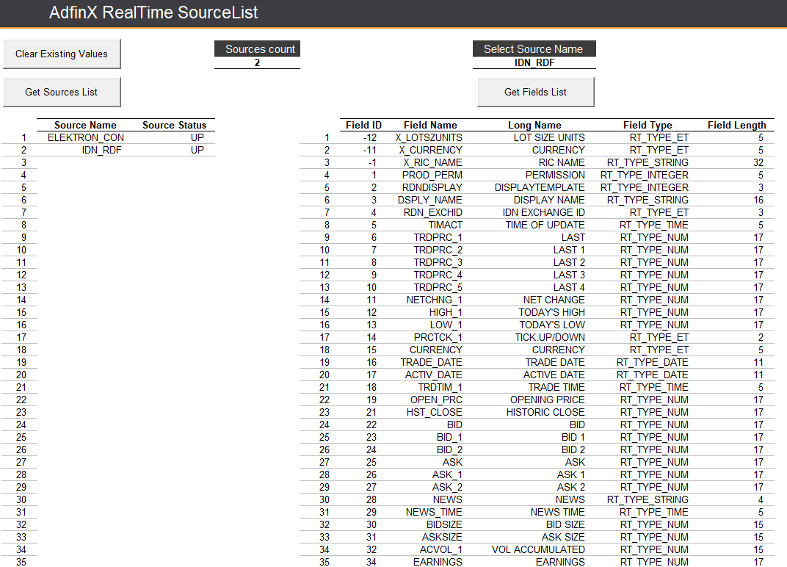
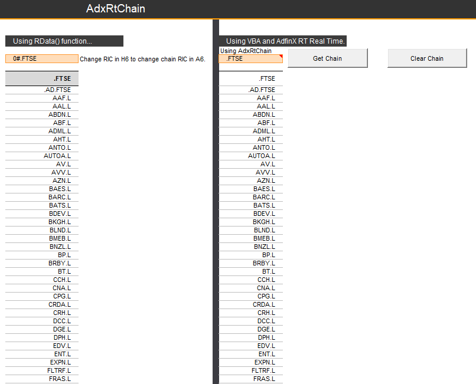
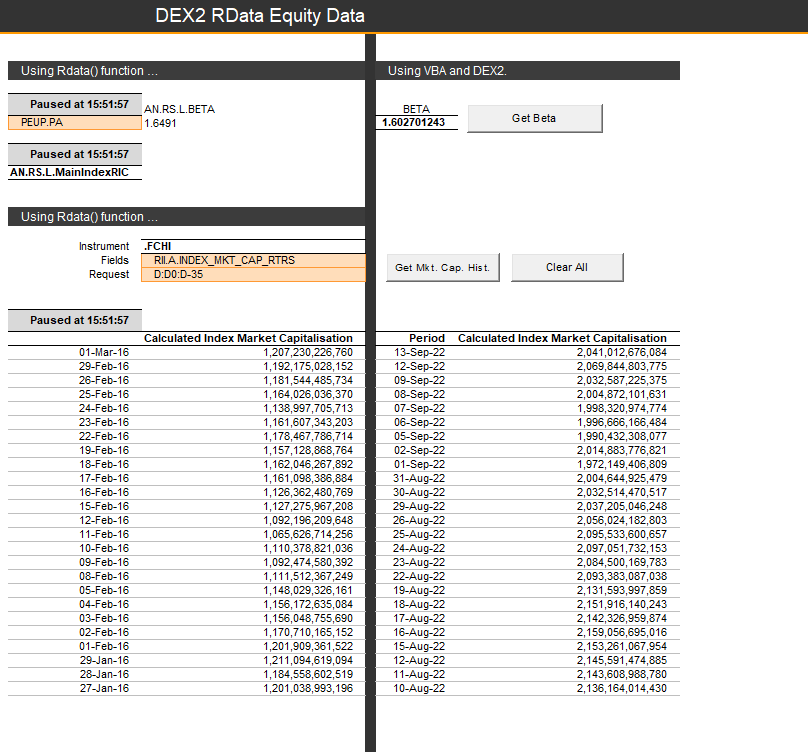
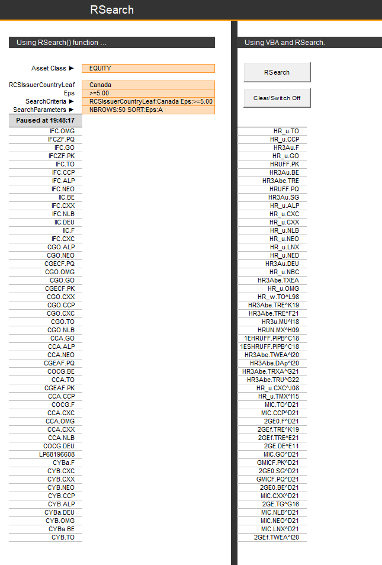

Migrating COM API calls to Python¶
This is the notebook for the article "Migrating COM API calls to Python"
What are the COM APIs¶
The COM APIs are older APIs that were initially delivered with 3000 Xtra Terminals and then Eikon. They provided access to a broad set of content and capabilities in Eikon.
The COM API covers a large range of functionalities, as shown in this article. Below we will show you how to migrate the following COM Component and API calls/functions:
AdfinXRtLib (rtx.dll)
dex2.dll
- Rdata List
- DEX2 (including Symbology Conversion, Time Series, Fundamental and Reference data)
RHistoryAPI.dll
RSearch.dll
RtContribute.dll
----The APIs below do not currently have replacements in Workspace---------------
Adxfo.dll
- AdfinX Analytics 2.0 Module
Adxfoo.dll
- AdfinX Analytics 3.0 Module
Reasons you might need or want to migrate away from COM APIs:¶
Need to operate in 64-bit environment¶
The COM APIs were designed to be used in 32-bit environments. Many teams are stil migrating to 64-bit environments where these will not work correctly and are not supported environments.
You want access to new datasets and improved capabilties offered on Refinitiv Data Platform¶
The COM APIs are feature-complete and no new development work is being done on them. This means that new datasets and capabilities will not be available to users of these APIs.
You want to upgrade from Eikon to Workspace¶
The COM APIs will not be available in Workspace - so to take advantage of the best desktop experience you would need to migrate to our more modern web-based APIs - which are much better and work with modern scripting environments such as Python - one of the most popular language ecosystems used in finance.
All the Python code below works in Codebook too! You can try it out as outlined in this Tutorial Video. We will use the Refinitiv Data Library (RD Library). To learn more about the Refinitiv Data Library for Python please join the Refinitiv Developer Community. By registering and logging into the Refinitiv Developer Community portal you will have free access to a number of learning materials like:
including the ability to ask questions on our Q&A forums and much more.
Prerequisites¶
COM Prerequisites - see annex at end of article for code¶
Documentation on using the COM API in the Microsoft Office suite is available here: COM APIs for Microsoft Office. Users were also able to use the COM APIs outside of Microsoft Office suite for example in a standalone app: COM APIs for use in custom applications. A list of the prerequisites in question can be found in the index of this article.
If you are new to Python, don't hesitate to install it on your machine and try it out yourself as outlined in this 3rd party tutorial. Otherwise, you can simply use Codebook as outlined in this Tutorial Video.
Python works with libraries that one can import to use functionalities that are not natively supported by the base coding package. Some popular distributuions of python include many of the popular packages that one could use for various tasks - Anaconda is the most popular such distribution.
The RD Library allows for code portability across the desktop and enterprise platforms - with only small changes in authentication credentials. These credentials are stored in a config file - but if you are just using the desktop you need not concern yourself with this as a desktop session is the default credential setup.
import refinitiv.data as rd # pip install httpx==0.21.3 # !pip install refinitiv.data --upgrade
from refinitiv.data.discovery import Chain
from refinitiv.data.content import search
import pandas as pd
pd.set_option('display.max_columns', None)
import numpy as np
import os
import time
import datetime # `datetime` allows us to manipulate time as we would data-points.
from IPython.display import display, clear_output # `IPython` here will allow us to plot grahs and the likes.
rd.open_session("desktop.workspace")
<refinitiv.data.session.Definition object at 0x2451fbb9660 {name='workspace'}>
AdfinX RealTime AdxRtSourceList¶
What does 'AdfinX RealTime AdxRtSourceList' do?¶
This functionality was used to get the real-time field list for the selected Source Name, such as an instrument (e.g.: VOD.L) (using AdxRtSourceList Class of AdfinXRtLib, the AdfinX Real Time 6.0 Library, rtx.dll). It was best demonstrated in the Tutorial 1 - Real-time Source List, Fields - AdxRtSourceList's Excel Workbook:
VBA¶
The VBA for AdxRtSourceList is very simple, and consists simply in creating an instance of an AdxRtSourceList object using the PLVbaApis function:
Set myAdxRtSrcLst = CreateAdxRtSourceList()
New Method¶
This functionality is replaced with a user interface called the Data Item Browswer (DIB) that you can find on workspace, and for which there is a video tutorial. This will give you a list of all real-time and non-real-time fields available for a particular instrument. For real-time fields the RD library can also provide this programatically - see below:
Real-Time Fields Available With The COM API¶
There are a limited number of fields available on the COM API in 'AdxRtSourceList', you can lookup fields available in the Quote app for any instrument in question:


More are available on the DIB and via the code available below in the 'Real-Time Fields Available In Python' section.
Note that available fields for each instrument type difffers on the type.
Note that the CF_ fields are also available to streaming Desktop sessions (not to platform sessions due to differences in data licenses)
Real-Time Fields Available In Python¶
You can get a collection of all the Real-Time fields available via:
RTCurrDf = rd.get_data(['GBP='])
print(list(RTCurrDf.columns))
['Instrument', 'PROD_PERM', 'RDNDISPLAY', 'DSPLY_NAME', 'TIMACT', 'NETCHNG_1', 'HIGH_1', 'LOW_1', 'CURRENCY', 'ACTIV_DATE', 'OPEN_PRC', 'HST_CLOSE', 'BID', 'BID_1', 'BID_2', 'ASK', 'ASK_1', 'ASK_2', 'ACVOL_1', 'TRD_UNITS', 'PCTCHNG', 'OPEN_BID', 'OPEN_ASK', 'CLOSE_BID', 'CLOSE_ASK', 'NUM_MOVES', 'OFFCL_CODE', 'HSTCLSDATE', 'YRHIGH', 'YRLOW', 'BCKGRNDPAG', 'BID_NET_CH', 'BID_TICK_1', 'MID_PRICE', 'MID_NET_CH', 'MID_CLOSE', 'HIGHTP_1', 'LOWTP_1', 'BID_HIGH_1', 'BID_LOW_1', 'YRBIDHIGH', 'YRBIDLOW', 'HST_CLSBID', 'HSTCLBDDAT', 'NUM_BIDS', 'RECORDTYPE', 'ACT_TP_1', 'ACT_TP_2', 'ACT_TP_3', 'SEC_ACT_1', 'SEC_ACT_2', 'SEC_ACT_3', 'SC_ACT_TP1', 'SC_ACT_TP2', 'SC_ACT_TP3', 'OPEN_TIME', 'HIGH_TIME', 'LOW_TIME', 'YRHIGHDAT', 'YRLOWDAT', 'IRGPRC', 'TIMCOR', 'PRIMACT_1', 'PRIMACT_2', 'PRIMACT_3', 'BASE_CCY', 'BCAST_REF', 'CROSS_SC', 'DLG_CODE1', 'DLG_CODE2', 'DLG_CODE3', 'CTBTR_1', 'CTBTR_2', 'CTBTR_3', 'CTB_LOC1', 'CTB_LOC2', 'CTB_LOC3', 'CTB_PAGE1', 'CTB_PAGE2', 'CTB_PAGE3', 'VALUE_DT1', 'VALUE_DT2', 'VALUE_DT3', 'SEC_HIGH', 'SEC_HI_TP', 'SEC_LOW', 'SEC_LO_TP', 'OPEN_TYPE', 'CLOSE_TYPE', 'BKGD_REF', 'GEN_TEXT16', 'GEN_VAL3', 'GEN_VAL4', 'GV1_TEXT', 'GV2_TEXT', 'GV4_TEXT', 'VALUE_TS1', 'VALUE_TS2', 'VALUE_TS3', 'QUOTIM', 'GEN_VAL5', 'GEN_VAL6', 'GEN_VAL7', 'GEN_VAL8', 'GEN_VAL9', 'GEN_VAL10', 'GV5_TEXT', 'GV6_TEXT', 'GV7_TEXT', 'GV8_TEXT', 'GV9_TEXT', 'GV10_TEXT', 'GN_TXT16_2', 'GV1_TIME', 'PREF_DISP', 'GN_TXT24_1', 'DSO_ID', 'RDN_EXCHD2', 'PREV_DISP', 'ASIA_CL_DT', 'ASIA_CLOSE', 'ASIA_HI_TM', 'ASIA_HIGH', 'ASIA_LOW', 'ASIA_LW_TM', 'ASIA_NETCH', 'ASIA_OP_TM', 'ASIA_OPEN', 'EURO_CL_DT', 'EURO_CLOSE', 'EURO_HI_TM', 'EURO_HIGH', 'EURO_LOW', 'EURO_LW_TM', 'EURO_NETCH', 'EURO_OP_TM', 'EURO_OPEN', 'US_CL_DT', 'US_CLOSE', 'US_HI_TM', 'US_HIGH', 'US_LOW', 'US_LW_TM', 'US_NETCH', 'US_OP_TM', 'US_OPEN', 'ASK_SPREAD', 'BID_SPREAD', 'MID_SPREAD', 'MONTH_HIGH', 'MONTH_LOW', 'QUOTE_DATE', 'WEEK_HIGH', 'WEEK_LOW', 'ASK_HIGH_1', 'ASK_HI_TME', 'ASK_LOW_1', 'ASK_LO_TME', 'BID_ASK_DT', 'HIGH_2', 'HIGH_3', 'HIGH_4', 'HIGH_5', 'HIGH_TIME2', 'HIGH_TIME3', 'HIGH_TIME4', 'HIGH_TIME5', 'LOW_2', 'LOW_3', 'LOW_4', 'LOW_5', 'LOW_TIME2', 'LOW_TIME3', 'LOW_TIME4', 'LOW_TIME5', 'SCALING', 'START_DT', 'WKHI_DT', 'WKLO_DT', 'MTHHI_DT', 'MTHLO_DT', 'QUOTIM_MS', 'MID_HIGH', 'MID_LOW', 'MID_HTIM', 'MID_LTIM', 'MID_OPEN', 'CONTEXT_ID', 'CF_ASK', 'CF_BID', 'CF_CLOSE', 'CF_DATE', 'CF_EXCHNG', 'CF_HIGH', 'CF_LAST', 'CF_LOW', 'CF_NETCHNG', 'CF_SOURCE', 'CF_TICK', 'CF_TIME', 'CF_VOLUME', 'BID_HIGH_2', 'BID_HIGH_3', 'BID_HIGH_4', 'BID_HIGH_5', 'BID_LOW_2', 'BID_LOW_3', 'BID_LOW_4', 'BID_LOW_5', 'ASK_HIGH_2', 'ASK_HIGH_3', 'ASK_HIGH_4', 'ASK_HIGH_5', 'ASK_LOW_2', 'ASK_LOW_3', 'ASK_LOW_4', 'ASK_LOW_5', 'PRV_BID_H', 'PRV_ASK_H', 'PRV_BID_L', 'PRV_ASK_L', 'CF_NAME', 'DDS_DSO_ID', 'BR_LINK1', 'BR_LINK2', 'BR_LINK3', 'CF_CURR', 'SPS_SP_RIC', 'QUOTIM_2', 'QUOTIM_3', 'QUOTE_DT2', 'QUOTE_DT3', 'ASKYRHIDAT', 'ASKYRLODAT', 'BIDYRHIDAT', 'BIDYRLODAT', 'ASIABAC_DT', 'EUBAC_DT', 'USBAC_DT', 'HST_NUMBID', 'ASK_FWDOR', 'BID_FWDOR', 'AMERCL_ASK', 'AMERCL_BID', 'AMERHI_ASK', 'AMERHI_BID', 'AMERLO_ASK', 'AMERLO_BID', 'AMEROP_ASK', 'AMEROP_BID', 'ASIACL_ASK', 'ASIACL_BID', 'ASIAHI_ASK', 'ASIAHI_BID', 'ASIALO_ASK', 'ASIALO_BID', 'ASIAOP_ASK', 'ASIAOP_BID', 'BIDPCTCHNG', 'EURCL_ASK', 'EURCL_BID', 'EURHI_ASK', 'EURHI_BID', 'EURLO_ASK', 'EURLO_BID', 'EUROP_ASK', 'EUROP_BID', 'HST_HIMID', 'HST_LOMID', 'HST_OPNASK', 'HST_OPNBID', 'YRASKHIGH', 'YRASKLOW', 'ASIA_BNC', 'EURO_BNC', 'MTH_ASK_LO', 'MTH_BID_HI', 'US_BNC', 'WK_ASK_LO', 'WK_BID_HI', 'BID_HOURLY', 'RCS_AS_CL2', 'MTH_ALO_DT', 'MTH_BHI_DT', 'WK_ALO_DT', 'WK_BHI_DT', 'FXMM_TYPE', 'ASIA_AH_MS', 'ASIA_AL_MS', 'ASIA_AO_MS', 'ASIA_BH_MS', 'ASIA_BL_MS', 'ASIA_BO_MS', 'EURO_AH_MS', 'EURO_AL_MS', 'EURO_AO_MS', 'EURO_BH_MS', 'EURO_BL_MS', 'EURO_BO_MS', 'US_AH_MS', 'US_AL_MS', 'US_AO_MS', 'US_BH_MS', 'US_BL_MS', 'US_BO_MS', 'OPN_BID_MS', 'ASKHI1_MS', 'ASKHI2_MS', 'ASKHI3_MS', 'ASKHI4_MS', 'ASKHI5_MS', 'ASKLO1_MS', 'ASKLO2_MS', 'ASKLO3_MS', 'ASKLO4_MS', 'ASKLO5_MS', 'BIDHI1_MS', 'BIDHI2_MS', 'BIDHI3_MS', 'BIDHI4_MS', 'BIDHI5_MS', 'BIDLO1_MS', 'BIDLO2_MS', 'BIDLO3_MS', 'BIDLO4_MS', 'BIDLO5_MS', 'MIDHI1_MS', 'MIDLO1_MS', 'BID_HR_MS', 'X_RIC_NAME', 'X_CURRENCY', 'RI_CODE', 'RI_FLAG', 'RI_DESC', 'PCTCHG_3M', 'PCTCHG_6M', 'PCTCHG_MTD', 'PCTCHG_YTD']
Note that available fields for each instrument type difffers on the type, e.g.:
ATMIVDf = rd.get_data(['AAPLATMIV.U'])
print(list(ATMIVDf.columns))
['Instrument', 'PROD_PERM', 'RDNDISPLAY', 'DSPLY_NAME', 'RDN_EXCHID', 'TIMACT', 'CURRENCY', 'TRADE_DATE', 'TRDTIM_1', 'TRD_UNITS', 'RECORDTYPE', 'SALTIM', 'BEST_BID1', 'BEST_BID2', 'BEST_BID3', 'BEST_ASK1', 'BEST_ASK2', 'BEST_ASK3', 'BCAST_REF', 'BEST_BSIZ1', 'BEST_BSIZ2', 'BEST_BSIZ3', 'BEST_ASIZ1', 'BEST_ASIZ2', 'BEST_ASIZ3', 'LONGLINK1', 'GV1_TEXT', 'GV2_TEXT', 'GV4_TEXT', 'PREF_DISP', 'PREF_LINK', 'DSPLY_NMLL', 'DSO_ID', 'RDN_EXCHD2', 'PREV_DISP', 'UNDERLYING', 'TIMACT_MS', 'OPTIONS', '30D_A_IM_C', '30D_A_IM_P', '60D_A_IM_C', '60D_A_IM_P', '90D_A_IM_C', '90D_A_IM_P', 'CONTEXT_ID', 'CF_DATE', 'CF_EXCHNG', 'CF_SOURCE', 'CF_TIME', 'CF_NAME', 'DDS_DSO_ID', 'CF_CURR', 'SPS_SP_RIC', 'X_RIC_NAME', 'X_CURRENCY', 'RI_CODE', 'RI_FLAG', 'RI_DESC']
AdfinX RealTime AdxRtList¶
What does AdxRtList do?¶
Returns real-time data for multiple (or single) instrument and fields. Data is returned initially as ONIMAGE - which is a snapshot of data for the requested fields, followed by a series of ONUPDATE messages - which are received whenever a data item changes or gets updated. You can also request ONTIME returns which would give an ONIMAGE snapshot at periodic intervals (say every hour for example). All the following functions rely on AdxRtList API calls - RtGet(), RData() and TR() for real-time data. Typically we would need to write callback handlers to deal with the returns from the API.
RtGet Real-Time¶
When using the old COM API to get RtGet Real Time data, one may be greeted with an Excel sheet that looks like the below, as per Tutorial 2 - Real-time Data Retrieval - AdxRtList's Excel workbook:

The functionalities shown here are easily recreated using the RD Library:
- Real Time FX rates snapshot - 'Real-Time ONIMAGE'
- 'Real Time Update', which updates real time, as soon as an update for the instrument and field is received
- A periodic ONTIME snapshot
Real-Time ONIMAGE¶
When collecting data ONIMAGE, we are collecting a current snapshot of the data we're after. This could not be simpler in RD in Python!
VBA¶
In VBA, you'd create an instance of an AdxRtList object using the PLVbaApis function CreateAdxRtList.
Set myRtGet = CreateAdxRtList() ' The code will replicate RtGet(), one instrument, one field.'
Set myAdxRtList = CreateAdxRtList() ' The code will replicate RData(), multiple items & fields.'
Then create your function cmdGetRealTimeONIMAGE_Click:
Private Sub cmdGetRealTimeONIMAGE_Click() Dim strRICs As String ' Can have one or more items Dim varFIDs As Variant ' Field can be numeric as well as a string, e.g. BID is field 22 ActiveCell.Select If Not myRtGet Is Nothing Then Set myRtGet = Nothing Set myRtGet = CreateAdxRtList() With myRtGet .ErrorMode = DialogBox .Source = [Source].Value strRICs = [RIC].Value varFIDs = [FID].Value .RegisterItems strRICs, varFIDs ' 'Different methods shown below. ' strRICs = "EUR=" ' varFIDs = "BID" ' .RegisterItems strRICs, varFIDs ' .RegisterItems "EUR=,GBP=,JPY=", "BID,ASK" .StartUpdates RT_MODE_IMAGE ' 4 '.StartUpdates RT_MODE_ONUPDATE ' 3 '.StartUpdates RT_MODE_NOT_SET ' 5 '.StartUpdates RT_MODE_ONTIME ' 2 '.StartUpdates RT_MODE_ONTIME_IF_UPDATED ' 1 End With ' For the With myRtGet End Sub
This would allow, in this example, for the 'Get Real Time ONIMAGE' buttons to work. For updates, the below could be used:
' Returns the initial image for the instrument. NOTE - .StartUpdates RT_MODE_IMAGE Private Sub myRtGet_OnImage(ByVal DataStatus As AdfinXRtLib.RT_DataStatus) Dim arrRICs As Variant, arrFields As Variant Dim lngRICFidVal As Single Dim a As Integer If DataStatus = RT_DS_FULL Then With myRtGet ' Array of the list of instruments - only one in this case. arrRICs = .ListItems(RT_IRV_ALL, RT_ICV_USERTAG) ' Array of the list of Fields for the ath item in the arrRics (base 0) a = 0 arrFields = .ListFields(arrRICs(a, 0), RT_FRV_ALL, RT_FCV_VALUE) End With ' And a specific value for a specific instrument, specific field. 'lngRICFidVal = myRtGet.Value("EUR=", "BID") lngRICFidVal = myRtGet.Value([RIC].Value, [FID].Value) [F7].Value = lngRICFidVal End If End Sub
Python¶
In python, things could not be easier as most of the equivalent code about is abstracted to the library and you just use a one-line function! You can go ahead and try it all out in Codebook:
rd.get_data(
universe=['GBP=', 'EUR=', 'JPY='],
fields=['BID', 'ASK'])
| Instrument | BID | ASK | |
|---|---|---|---|
| 0 | GBP= | 1.2765 | 1.2769 |
| 1 | EUR= | 1.1 | 1.1002 |
| 2 | JPY= | 142.33 | 142.34 |
You can easily assign this info to an object too.
realTimeImage = rd.get_data(
['GBP=', 'EUR=', 'JPY='],
['BID', 'ASK'])
realTimeImage
| Instrument | BID | ASK | |
|---|---|---|---|
| 0 | GBP= | 1.2765 | 1.2769 |
| 1 | EUR= | 1.0998 | 1.1002 |
| 2 | JPY= | 142.31 | 142.34 |
Real-Time ONUPDATE¶
VBA¶
The 'Real Time ONUPDATE' buttons in the example pictured above was coded with VBA code for cmdGetRealTimeONUPDATE_Click:
Private Sub cmdGetRealTimeONUPDATE_Click() Dim strRICs As Variant, varFIDs As Variant ActiveCell.Select Set myRtGet2 = CreateAdxRtList With myRtGet2 .ErrorMode = DialogBox .Source = [Source].Value strRICs = [RIC].Value varFIDs = [FID].Value .RegisterItems strRICs, varFIDs .StartUpdates RT_MODE_ONUPDATE End With ' For the With myRtGet2 End Sub ' Returns the data for updates - NOTE .StartUpdates RT_MODE_ONUPDATE. Private Sub myRtGet2_OnUpdate(ByVal a_itemName As String, ByVal a_userTag As Variant, ByVal a_itemStatus As AdfinXRtLib.RT_ItemStatus) Dim arrFields As Variant Dim lngRICFidVal As Long If a_itemStatus = RT_ITEM_OK Then arrFields = myRtGet2.ListFields(a_itemName, RT_FRV_ALL, RT_FCV_VALUE) ' And a specific value for a specific instrument, specific field. 'If a_itemName = "EUR=" Then lngRICFidVal = myRtGet2.Value("EUR=", "BID"): [F12].Value = arrFields(0, 1) If a_itemName = [RIC].Value Then lngRICFidVal = myRtGet2.Value([RIC].Value, [FID].Value): [F12].Value = arrFields(0, 1) End If End Sub
Then, on VBA, you'd have to have a buttons to stop the stream with cmdSwitchRealTimeOFF_Click, which, in python, is stream.close():
Python¶
For us to start using pricing streams with events, we need to define a callback to receive data events:
def display_data(data, instrument, stream):
clear_output(wait=True)
current_time = datetime.datetime.now().time()
print(current_time, "- Data received for", instrument)
display(data)
Open the stream and register the callback
stream = rd.open_pricing_stream(
universe=['GBP=', 'EUR=', 'JPY='],
fields=['BID', 'ASK'],
on_data=display_data
)
stream.open()
17:14:41.360364 - Data received for EUR=
| ASK | BID | |
|---|---|---|
| EUR= | 1.1002 | 1.0998 |
<OpenState.Opened: 'Opened'>
Close the stream
stream.close()
<OpenState.Closed: 'Closed'>
More related RD capabilities can be found here.
Real-Time ONTIME¶
With Real-Time ONTIME, you can get snapshot updates at a specific frequency:
We can use a Python loop with sleep to recreate that simply:
The cell below gets an update for instruments 'GBP=', 'EUR=' and 'JPY=' and fields 'BID' and 'ASK' every 5 seconds:
# This cell's code is usually commented out so that the kernel doesn't get stuck in the while loop.
now = time.perf_counter()
while time.perf_counter() < now + 30:
time.sleep(5)
clear_output(wait=True)
df = stream.get_snapshot(
universe=['GBP=', 'EUR=', 'JPY='],
fields=['BID', 'ASK'])
display(df)
| Instrument | BID | ASK | |
|---|---|---|---|
| 0 | GBP= | 1.2765 | 1.2769 |
| 1 | EUR= | 1.0998 | 1.1002 |
| 2 | JPY= | 142.31 | 142.34 |
NEW FUNCTIONALITY: Record ticks¶
With the RD library we now have the ability to record a pricing stream. Here's how:
Create and open a Pricing stream
stream = rd.open_pricing_stream(
universe=['GBP=', 'EUR=', 'JPY='],
fields=['BID']
)
Start recording
stream.recorder.record(frequency='tick')
... Wait for a little while (5 seconds) ...
time.sleep(5)
Stop recording and display the recorded history
stream.recorder.stop()
tick_history = stream.recorder.get_history()
display(tick_history)
| JPY= | EUR= | GBP= | |
|---|---|---|---|
| BID | BID | BID | |
| Timestamp | |||
| 2023-08-07 17:15:11.897845 | <NA> | 1.0999 | <NA> |
| 2023-08-07 17:15:12.167317 | <NA> | 1.0998 | <NA> |
| 2023-08-07 17:15:12.808226 | <NA> | <NA> | 1.2765 |
| 2023-08-07 17:15:13.012624 | 142.32 | <NA> | <NA> |
| 2023-08-07 17:15:13.109200 | <NA> | <NA> | 1.2765 |
| 2023-08-07 17:15:13.247973 | 142.32 | <NA> | <NA> |
| 2023-08-07 17:15:14.939445 | <NA> | <NA> | 1.2765 |
| 2023-08-07 17:15:15.258603 | <NA> | <NA> | 1.2765 |
Resample the tick history to 5 seconds bars
tick_history.ohlc("5s")
| JPY= | EUR= | GBP= | ||||||||||
|---|---|---|---|---|---|---|---|---|---|---|---|---|
| BID | BID | BID | ||||||||||
| open | high | low | close | open | high | low | close | open | high | low | close | |
| Timestamp | ||||||||||||
| 2023-08-07 17:15:10 | 142.32 | 142.32 | 142.32 | 142.32 | 1.0999 | 1.0999 | 1.0998 | 1.0998 | 1.2765 | 1.2765 | 1.2765 | 1.2765 |
| 2023-08-07 17:15:15 | 142.32 | 142.32 | 142.32 | 142.32 | 1.0998 | 1.0998 | 1.0998 | 1.0998 | 1.2765 | 1.2765 | 1.2765 | 1.2765 |
Close the stream
stream.close()
<OpenState.Closed: 'Closed'>
AdfinX RealTime - AdxRtChain¶
What does AdxRtChain do?¶
As per Tutorial 3 - Real-time Chain Retrieval - AdxRtChain's Excel Workbook, Adfin X RealTime Chain (AdxRtChain) returns a list of the constituent instrument codes for any chain such as 0#.FTSE (the FTSE 100 instruments). Data is returned as OnUpdate event, the only other event is OnStatusChange:
VBA¶
In VBA, we went through with the creation of cmdGetChain_Click:
Private Sub cmdGetChain_Click() ActiveCell.Select If myAdxRtChain Is Nothing Then Set myAdxRtChain = CreateAdxRtChain() With myAdxRtChain .Source = "IDN" .ItemName = Range("G6").Value .RequestChain End With End Sub
then myAdxRtChain_OnUpdate:
Private Sub myAdxRtChain_OnUpdate(ByVal DataStatus As AdfinXRtLib.RT_DataStatus) Dim i As Integer If DataStatus = RT_DS_FULL Then For i = 1 To UBound(myAdxRtChain.Data) Range("G8").Offset(i - 1, 0).Value = myAdxRtChain.Data(i) Next i End If End Sub
then we ought to make sure we can close the connection with cmdClearChain_Click, which is done simply in Python with rd.close_session().
We can replicate this easily in Python with the Pricing snapshots and Fundamental & Reference data function get_data() - moreover we can decode the chain and request fields in one operation:
FTSEConstituentDf1 = rd.get_data(
universe=['0#.FTSE'],
fields=['TR.TURNOVER.timestamp', 'TR.TURNOVER', 'TR.EVToSales'])
FTSEConstituentDf1
| Instrument | Timestamp | Turnover | Enterprise Value To Sales (Daily Time Series Ratio) | |
|---|---|---|---|---|
| 0 | STAN.L | 2023-08-04T00:00:00Z | 1617050481.42144 | 2.199541 |
| 1 | CRDA.L | 2023-08-04T00:00:00Z | 1446420601.64436 | 4.514856 |
| 2 | ANTO.L | 2023-08-04T00:00:00Z | 553362876.526695 | 4.167853 |
| 3 | BNZL.L | 2023-08-04T00:00:00Z | 695248529.997 | 0.917159 |
| 4 | SGE.L | 2023-08-04T00:00:00Z | 1285638962.45617 | 4.87746 |
| ... | ... | ... | ... | ... |
| 95 | EDV.L | 2023-08-04T00:00:00Z | 341682121.744 | 2.73398 |
| 96 | OCDO.L | 2023-08-04T00:00:00Z | 1575772623.73641 | 3.085712 |
| 97 | LSEG.L | 2023-08-04T00:00:00Z | 5135119619.1114 | 6.469414 |
| 98 | TSCO.L | 2023-08-04T00:00:00Z | 2687801488.91378 | 0.433823 |
| 99 | LGEN.L | 2023-08-04T00:00:00Z | 1597944558.74917 | <NA> |
100 rows × 4 columns
Not all chains resolve directly - for example a commodity chain - in such cases we can use the Chain Object to decode as follows:¶
LCOConstituentDf = rd.get_data(
universe=Chain('0#LCO:'),
fields=["CF_NAME","CF_CLOSE","OPINT_1"])
LCOConstituentDf
StreamingChain :: waiting to update because chain decode does not completed. StreamingChain :: waiting to update because chain decode does not completed. StreamingChain :: waiting to update because chain decode does not completed. StreamingChain :: waiting to update because chain decode does not completed. StreamingChain :: waiting to update because chain decode does not completed. StreamingChain :: waiting to update because chain decode does not completed.
| Instrument | CF_NAME | CF_CLOSE | OPINT_1 | |
|---|---|---|---|---|
| 0 | LCOTOT | BRENT CRUDE VOLS | <NA> | 2687337 |
| 1 | LCOV3 | BRENT CRUDE OCT3 | 86.24 | 517390 |
| 2 | LCOX3 | BRENT CRUDE NOV3 | 85.78 | 378052 |
| 3 | LCOZ3 | BRENT CRUDE DEC3 | 85.32 | 313421 |
| 4 | LCOF4 | BRENT CRUDE JAN4 | 84.85 | 122634 |
| ... | ... | ... | ... | ... |
| 74 | LCOX9 | BRENT CRUDE NOV9 | 67.06 | <NA> |
| 75 | LCOZ9 | BRENT CRUDE DEC9 | 66.96 | <NA> |
| 76 | LCOF0 | BRENT CRUDE JAN0 | 66.88 | <NA> |
| 77 | LCOG0 | BRENT CRUDE FEB0 | 66.8 | <NA> |
| 78 | LCOH0 | BRENT CRUDE MAR0 | 66.72 | <NA> |
79 rows × 4 columns
AdfinX RealTime - AdxRtHistory - Interday Time Series History¶
What does AdxRtHistory do?¶
Adfin RealTime History (AdxRtHistory) is used to retrieve interday (not intraday) time series (historic) data for an instrument or instruments. This was best exemplified in Tutorial 5 - Time Series History - AdxRtHistory's Excel Workbook:

VBA¶
In VBA, we used AdfinXRtLib:
' Note the use of CreateReutersObject - function in the PLVbaApis module. If myAdxRtHist Is Nothing Then Set myAdxRtHist = CreateReutersObject("AdfinXRtLib.AdxRtHistory") On Error GoTo errHndlr With myAdxRtHist .FlushData .ErrorMode = EXCEPTION ' EXCEPTION, DialogBox, NO_EXCEPTION .Source = "IDN" .ItemName = [C7].Value .Mode = [H8].Value .RequestHistory ("DATE,CLOSE,VOLUME") 'NOTE USE OF OLD FIELD NAMES, NOT ("TRDPRC_1.TIMESTAMP,TRDPRC_1.CLOSE,TRDPRC_1.VOLUME") 'arrFlds = Array("DATE","CLOSE","VOLUME") '.RequestHistory ()arrFlds '.RequestHistory ("*") ' "*" requests all fields. End With
before the Private Sub 'myAdxRtHist_OnUpdate(ByVal DataStatus As AdfinXRtLib.RT_DataStatus)'.
Things are simpler in Python:
Python¶
As aforementioned, AdxRtHistory is used to retrieve time series (historic) data for an instrument or instruments except for intraday data. This is exactly what the instruments get_history is for!
FTSEConstituents = list(FTSEConstituentDf1['Instrument'])
print(FTSEConstituents)
['STAN.L', 'CRDA.L', 'ANTO.L', 'BNZL.L', 'SGE.L', 'SVT.L', 'ICAG.L', 'REL.L', 'SMIN.L', 'AZN.L', 'HSBA.L', 'CTEC.L', 'WPP.L', 'FRES.L', 'AAF.L', 'SGRO.L', 'SJP.L', 'TW.L', 'AHT.L', 'HLMA.L', 'III.L', 'CNA.L', 'MNG.L', 'BKGH.L', 'SMDS.L', 'NG.L', 'RKT.L', 'SKG.L', 'WEIR.L', 'IMI.L', 'MRON.L', 'HSX.L', 'CPG.L', 'AUTOA.L', 'AV.L', 'ENT.L', 'DGE.L', 'INF.L', 'UU.L', 'PSHP.L', 'HLN.L', 'WTB.L', 'PRU.L', 'IMB.L', 'EXPN.L', 'BRBY.L', 'RS1R.L', 'ABDN.L', 'GSK.L', 'LAND.L', 'BEZG.L', 'BP.L', 'JD.L', 'ABF.L', 'AAL.L', 'ADML.L', 'RTO.L', 'RMV.L', 'SBRY.L', 'PHNX.L', 'FLTRF.L', 'IHG.L', 'BT.L', 'MNDI.L', 'BATS.L', 'PSON.L', 'CRH.L', 'SPX.L', 'PSN.L', 'RIO.L', 'JMAT.L', 'CCH.L', 'RR.L', 'SN.L', 'BMEB.L', 'SSE.L', 'SMT.L', 'FRAS.L', 'HRGV.L', 'KGF.L', 'LLOY.L', 'NWG.L', 'SDR.L', 'NXT.L', 'ITRK.L', 'BDEV.L', 'SHEL.L', 'GLEN.L', 'VOD.L', 'BARC.L', 'FCIT.L', 'UTG.L', 'BAES.L', 'DCC.L', 'ULVR.L', 'EDV.L', 'OCDO.L', 'LSEG.L', 'TSCO.L', 'LGEN.L']
FTSEConstituents[0:6]
['STAN.L', 'CRDA.L', 'ANTO.L', 'BNZL.L', 'SGE.L', 'SVT.L']
TimeSeriesDf = rd.get_history(
universe=FTSEConstituents[1:6],
fields=['TR.PriceClose','TR.Volume', ], # 'TR' fields are usually historic ones.
interval="1D",
start="2022-01-25",
end="2022-02-01")
TimeSeriesDf
| CRDA.L | ANTO.L | BNZL.L | SGE.L | SVT.L | ||||||
|---|---|---|---|---|---|---|---|---|---|---|
| Price Close | Volume | Price Close | Volume | Price Close | Volume | Price Close | Volume | Price Close | Volume | |
| Date | ||||||||||
| 2022-01-25 | 7666 | 371438 | 1379.0 | 1429044 | 2721 | 678948 | 762.4 | 3467017 | 2858 | 642275 |
| 2022-01-26 | 7830 | 755599 | 1411.5 | 889172 | 2754 | 628530 | 713.0 | 4323758 | 2871 | 318280 |
| 2022-01-27 | 7880 | 754142 | 1391.5 | 1460311 | 2776 | 671478 | 701.0 | 4752740 | 2914 | 522647 |
| 2022-01-28 | 7774 | 510683 | 1337.5 | 2839242 | 2786 | 1203491 | 711.2 | 3683775 | 2893 | 1017099 |
| 2022-01-31 | 7972 | 442252 | 1332.5 | 1333271 | 2767 | 545449 | 720.8 | 2966860 | 2873 | 751851 |
| 2022-02-01 | 8008 | 690445 | 1361.5 | 1605104 | 2775 | 433783 | 718.6 | 4462156 | 2903 | 439666 |
AdxRtHistory - Intraday Time Series History¶
VBA¶
Adfin RealTime History (AdxRtHistory) Intraday is similar
Which had few VBA lines needed:
Private Sub cmdGetInterday_Click() ActiveCell.Select MsgBox "AdxRtHistory cannot retrieve INTRA day data, use the RHistoryAPI instead" End Sub
Python¶
Intraday data is just as easy to get:
IntradayTimeSeriesDf = rd.get_history(
universe=FTSEConstituents,
fields=['TRDPRC_1'],
interval="1min", # The consolidation interval. Supported intervals are: tick, tas, taq, minute, 1min, 5min, 10min, 30min, 60min, hourly, 1h, daily, 1d, 1D, 7D, 7d, weekly, 1W, monthly, 1M, quarterly, 3M, 6M, yearly, 1Y.
start="2022-06-01T13:00:00",
end="2022-06-01T15:30:00")
IntradayTimeSeriesDf
As you can see, we get the data sought after. If you are after several fields for any one instrument (e.g.: an FX Pair), it couldn't be any simpler.
DEX2.dll¶
The DEX2.dll COM API component provides access to a broad range of fundamental and reference data (including all the TR.xxx fields). The RData Excel function provided both Fundamental and Reference as well as streaming realtime prices and news using this component under the hood along with RTX.dll.
Rdata List Realtime¶
When using the old COM API to get Rdata List data, one may be greeted with an Excel sheet that looks like this:

VBA¶
In VBA, this was done with a function akin to .StartUpdates RT_MODE_ONUPDATE & myRTList = CreateAdxRtList(), e.g.:
With myRTList .ErrorMode = EXCEPTION ' N.B.! Source name may need to be changed if not named as below! .Source = "IDN" '_SELECTFEED" ' Register the items and fields .RegisterItems ItemArray, FieldArray ' Set the user tag on each item. This helps indexing the results ' table for displaying the data in the callback For m = LBound(ItemArray) To UBound(ItemArray) .UserTag(ItemArray(m), "*") = m For n = LBound(FieldArray) To UBound(FieldArray) .UserTag(ItemArray(m), FieldArray(n)) = n Next n Next m .Mode = "TIMEOUT:5" ' If timed basis desired, then FRQ setting and RT_MODE_ONTIME or RT_MODE_ONTIME_IF_UPDATED required, ' which will trigger the OnUpdate event, shown below. '.Mode = "FRQ:2S" ' And, finally, request the data! Select Case Range("dcUpdateType").Value Case "RT_MODE_IMAGE" .StartUpdates RT_MODE_IMAGE Case "RT_MODE_ONUPDATE" .StartUpdates RT_MODE_ONUPDATE End Select '.StartUpdates RT_MODE_ONUPDATE '.StartUpdates RT_MODE_IMAGE 'Other modes shown below; different events will be fired. '.StartUpdates RT_MODE_ONTIME, RT_MODE_ONTIME_IF_UPDATED, RT_MODE_ONTIME, ' RT_MODE_ONUPDATE, RT_MODE_IMAGE , RT_MODE_NOT_SET End With
To stop this update, you would have to create some VBA code to (e.g.: Sub cmdStop_Click()), but that is simpler in Python with stream.close():
However - many developers also used the RData worksheet function object directly in VBA.
Python¶
Here we have a data-frame of instruments and fields updating live every x seconds, let's say (for the sake of the use-case example) every 3 seconds. This is simple to recreate in Python:
#define stream
stream = rd.open_pricing_stream(
universe=['GBP=', 'EUR=', 'JPY=', '.GDAXI', '.FTSE', '.NDX', 'TRI.TO', 'EURGBP=R'],
fields=['CF_TIME', 'CF_LAST', 'BID', 'ASK', 'TRDTIM_1'])
#open stream
stream.open()
<OpenState.Opened: 'Opened'>
# #add temporal update functionality using stream.get_snapshot
# now = time.perf_counter()
# while time.perf_counter() < now + 30:
# time.sleep(3)
# clear_output(wait=True)
# df = stream.get_snapshot(
# universe = ['GBP=', 'EUR=', 'JPY=', '.GDAXI', '.FTSE', '.NDX', 'TRI.TO', 'EURGBP=R'],
# fields = ['CF_TIME', 'CF_LAST', 'BID', 'ASK', 'TRDTIM_1'])
# display(df)
Close the stream
stream.close()
<OpenState.Closed: 'Closed'>
Create a Streaming Price and register event callbacks using RDP¶
You can build upon the example above, using the RDP Example notebook present in Codebook that demonstrates how to use a StreamingPrice with events to update a Pandas DataFrame with real-time streaming data. Using a StreamingPrices object that way allows your application to have at its own in memory representation (a Pandas DataFrame in this example) that is kept updated with the latest streaming values received from Eikon or Refinitiv Workspace. Here we're putting ourselves in the shoes of a Foreign eXchange (FX) trader looking at Emerging Market (EM) currency exchange rates; e.g: the Nigerian Nairas (NGN) and Indonesian Rupiah (IDR).
You can find the code for this on GitHub here.
RData Function¶
What does RData do?¶
RData is a flexible excel worksheet function allowing access to realtime and fundamental & reference data content. It can also be used programatcally in VBA and the results then dumped to an excel range for example.
VBA¶
For VBA related to Fundamental data, please see the 'DEX2 Fundamental and Reference' section below.
Python¶
We have separated getting current fundamental snapshots - using a rd.get_data function and getting historical fundamental timeseries using either the rd.get_data function or the rd.get_history() function.
Snapshot requests¶
For snapshot current fundamental requests - things are pretty straight forward - select your universe of instruments and then the list of fields you want. A full list of fields is available using the Data Item Browser App (type DIB into Eikon or Workspace search bar).
df1 = rd.get_data(
['BARC.L', 'TRI.N','TSLA.O'],
fields=[
'TR.RevenueMean.date','TR.RevenueMean','TR.TRBCEconomicSector','TR.TRBCEconSectorCode',
'TR.TRBCBusinessSector','TR.TRBCBusinessSectorCode','TR.TRBCIndustryGroup',
'TR.TRBCIndustryGroupCode','TR.TRBCIndustry', 'TR.TRBCIndustryCode']
)
df1
| Instrument | Date | Revenue - Mean | TRBC Economic Sector Name | TRBC Economic Sector Code | TRBC Business Sector Name | TRBC Business Sector Code | TRBC Industry Group Name | TRBC Industry Group Code | TRBC Industry Name | TRBC Industry Code | |
|---|---|---|---|---|---|---|---|---|---|---|---|
| 0 | BARC.L | 2023-08-02 | 26323319180 | Financials | 55 | Banking & Investment Services | 5510 | Banking Services | 551010 | Banks | 55101010 |
| 1 | TRI.N | 2023-08-07 | 6839279530 | Industrials | 52 | Industrial & Commercial Services | 5220 | Professional & Commercial Services | 522030 | Professional Information Services | 52203070 |
| 2 | TSLA.O | 2023-08-04 | 99818985860 | Consumer Cyclicals | 53 | Automobiles & Auto Parts | 5310 | Automobiles & Auto Parts | 531010 | Auto & Truck Manufacturers | 53101010 |
If we want to add some fundamental history to this request - we can add a parameters section to the get_data request - as below which will give us the last 4 fiscal years ('FRQ': 'FY') of history for each RIC. Note for static reference fields such sector codes - these will not be published as a timeseries history - however, we can forward fill as shown below.
df1 = rd.get_data(
['BARC.L', 'TRI.N','TSLA.O', Peers('HD'),Customers],
fields=[
'TR.RevenueMean.date','TR.RevenueMean',
'TR.TRBCEconomicSector', 'TR.TRBCEconSectorCode', 'TR.TRBCBusinessSector',
'TR.TRBCBusinessSectorCode', 'TR.TRBCIndustryGroup', 'TR.TRBCIndustryGroupCode',
'TR.TRBCIndustry', 'TR.TRBCIndustryCode'],
parameters={'SDate': 0, 'EDate': -3, 'FRQ': 'FY'}
)
df1
--------------------------------------------------------------------------- NameError Traceback (most recent call last) c:\Users\U6082174\OneDrive - London Stock Exchange Group\Projects\Migrating from COM APIs\Code\Migrating COM API Calls to Python_063.ipynb Cell 57 in <cell line: 1>() <a href='vscode-notebook-cell:/c%3A/Users/U6082174/OneDrive%20-%20London%20Stock%20Exchange%20Group/Projects/Migrating%20from%20COM%20APIs/Code/Migrating%20COM%20API%20Calls%20to%20Python_063.ipynb#Y110sZmlsZQ%3D%3D?line=0'>1</a> df1 = rd.get_data( ----> <a href='vscode-notebook-cell:/c%3A/Users/U6082174/OneDrive%20-%20London%20Stock%20Exchange%20Group/Projects/Migrating%20from%20COM%20APIs/Code/Migrating%20COM%20API%20Calls%20to%20Python_063.ipynb#Y110sZmlsZQ%3D%3D?line=1'>2</a> ['BARC.L', 'TRI.N','TSLA.O', Peers('HD'),Customers], <a href='vscode-notebook-cell:/c%3A/Users/U6082174/OneDrive%20-%20London%20Stock%20Exchange%20Group/Projects/Migrating%20from%20COM%20APIs/Code/Migrating%20COM%20API%20Calls%20to%20Python_063.ipynb#Y110sZmlsZQ%3D%3D?line=2'>3</a> fields=[ <a href='vscode-notebook-cell:/c%3A/Users/U6082174/OneDrive%20-%20London%20Stock%20Exchange%20Group/Projects/Migrating%20from%20COM%20APIs/Code/Migrating%20COM%20API%20Calls%20to%20Python_063.ipynb#Y110sZmlsZQ%3D%3D?line=3'>4</a> 'TR.RevenueMean.date','TR.RevenueMean', <a href='vscode-notebook-cell:/c%3A/Users/U6082174/OneDrive%20-%20London%20Stock%20Exchange%20Group/Projects/Migrating%20from%20COM%20APIs/Code/Migrating%20COM%20API%20Calls%20to%20Python_063.ipynb#Y110sZmlsZQ%3D%3D?line=4'>5</a> 'TR.TRBCEconomicSector', 'TR.TRBCEconSectorCode', 'TR.TRBCBusinessSector', <a href='vscode-notebook-cell:/c%3A/Users/U6082174/OneDrive%20-%20London%20Stock%20Exchange%20Group/Projects/Migrating%20from%20COM%20APIs/Code/Migrating%20COM%20API%20Calls%20to%20Python_063.ipynb#Y110sZmlsZQ%3D%3D?line=5'>6</a> 'TR.TRBCBusinessSectorCode', 'TR.TRBCIndustryGroup', 'TR.TRBCIndustryGroupCode', <a href='vscode-notebook-cell:/c%3A/Users/U6082174/OneDrive%20-%20London%20Stock%20Exchange%20Group/Projects/Migrating%20from%20COM%20APIs/Code/Migrating%20COM%20API%20Calls%20to%20Python_063.ipynb#Y110sZmlsZQ%3D%3D?line=6'>7</a> 'TR.TRBCIndustry', 'TR.TRBCIndustryCode'], <a href='vscode-notebook-cell:/c%3A/Users/U6082174/OneDrive%20-%20London%20Stock%20Exchange%20Group/Projects/Migrating%20from%20COM%20APIs/Code/Migrating%20COM%20API%20Calls%20to%20Python_063.ipynb#Y110sZmlsZQ%3D%3D?line=7'>8</a> parameters={'SDate': 0, 'EDate': -3, 'FRQ': 'FY'} <a href='vscode-notebook-cell:/c%3A/Users/U6082174/OneDrive%20-%20London%20Stock%20Exchange%20Group/Projects/Migrating%20from%20COM%20APIs/Code/Migrating%20COM%20API%20Calls%20to%20Python_063.ipynb#Y110sZmlsZQ%3D%3D?line=8'>9</a> ) <a href='vscode-notebook-cell:/c%3A/Users/U6082174/OneDrive%20-%20London%20Stock%20Exchange%20Group/Projects/Migrating%20from%20COM%20APIs/Code/Migrating%20COM%20API%20Calls%20to%20Python_063.ipynb#Y110sZmlsZQ%3D%3D?line=10'>11</a> df1 NameError: name 'Peers' is not defined
# The below in this cell is needed to forward fill our dataframe correctly:
df1.replace({'': np.nan}, inplace=True)
df1.where(pd.notnull(df1), np.nan, inplace=True)
for i in df1.groupby(by=["Instrument"]):
if i[0] == df1["Instrument"][0]: _df1 = i[1].ffill()
else: _df1 = _df1.append(i[1].ffill())
_df1
| Instrument | Date | Revenue - Mean | TRBC Economic Sector Name | TRBC Economic Sector Code | TRBC Business Sector Name | TRBC Business Sector Code | TRBC Industry Group Name | TRBC Industry Group Code | TRBC Industry Name | TRBC Industry Code | |
|---|---|---|---|---|---|---|---|---|---|---|---|
| 0 | BARC.L | 2023-03-06 | 26185926370 | Financials | 55 | Banking & Investment Services | 5510 | Banking Services | 551010 | Banks | 55101010 |
| 1 | BARC.L | 2023-02-13 | 25107439220 | Financials | 55 | Banking & Investment Services | 5510 | Banking Services | 551010 | Banks | 55101010 |
| 2 | BARC.L | 2022-02-11 | 21896182240 | Financials | 55 | Banking & Investment Services | 5510 | Banking Services | 551010 | Banks | 55101010 |
| 3 | BARC.L | 2021-01-28 | 21603248110 | Financials | 55 | Banking & Investment Services | 5510 | Banking Services | 551010 | Banks | 55101010 |
| 4 | TRI.N | 2023-02-22 | 6937020650 | Industrials | 52 | Industrial & Commercial Services | 5220 | Professional & Commercial Services | 522030 | Professional Information Services | 52203070 |
| 5 | TRI.N | 2023-02-01 | 6626869820 | Industrials | 52 | Industrial & Commercial Services | 5220 | Professional & Commercial Services | 522030 | Professional Information Services | 52203070 |
| 6 | TRI.N | 2022-02-07 | 6311529500 | Industrials | 52 | Industrial & Commercial Services | 5220 | Professional & Commercial Services | 522030 | Professional Information Services | 52203070 |
| 7 | TRI.N | 2021-02-22 | 5980789530 | Industrials | 52 | Industrial & Commercial Services | 5220 | Professional & Commercial Services | 522030 | Professional Information Services | 52203070 |
| 8 | TSLA.O | 2023-03-05 | 103133758370 | Consumer Cyclicals | 53 | Automobiles & Auto Parts | 5310 | Automobiles & Auto Parts | 531010 | Auto & Truck Manufacturers | 53101010 |
| 9 | TSLA.O | 2023-01-25 | 81715341140 | Consumer Cyclicals | 53 | Automobiles & Auto Parts | 5310 | Automobiles & Auto Parts | 531010 | Auto & Truck Manufacturers | 53101010 |
| 10 | TSLA.O | 2022-01-25 | 52595085190 | Consumer Cyclicals | 53 | Automobiles & Auto Parts | 5310 | Automobiles & Auto Parts | 531010 | Auto & Truck Manufacturers | 53101010 |
| 11 | TSLA.O | 2021-01-27 | 31012329500 | Consumer Cyclicals | 53 | Automobiles & Auto Parts | 5310 | Automobiles & Auto Parts | 531010 | Auto & Truck Manufacturers | 53101010 |
This does not work at the moment correctly - awaiting new frequency types from Olivier¶
#change to get history
df1 = rd.get_history(
['BARC.L', 'TRI.N','TSLA.O'],
fields=[
'TR.RevenueMean.date','TR.RevenueMean','TR.TRBCEconomicSector','TR.TRBCEconSectorCode',
'TR.TRBCBusinessSector','TR.TRBCBusinessSectorCode','TR.TRBCIndustryGroup',
'TR.TRBCIndustryGroupCode','TR.TRBCIndustry', 'TR.TRBCIndustryCode'],
start="2020-01-01",end="2022-12-31",interval="1Y")
df1
| BARC.L | TRI.N | TSLA.O | ||||||||||||||||||||||||||||
|---|---|---|---|---|---|---|---|---|---|---|---|---|---|---|---|---|---|---|---|---|---|---|---|---|---|---|---|---|---|---|
| Date | Revenue - Mean | TRBC Economic Sector Name | TRBC Economic Sector Code | TRBC Business Sector Name | TRBC Business Sector Code | TRBC Industry Group Name | TRBC Industry Group Code | TRBC Industry Name | TRBC Industry Code | Date | Revenue - Mean | TRBC Economic Sector Name | TRBC Economic Sector Code | TRBC Business Sector Name | TRBC Business Sector Code | TRBC Industry Group Name | TRBC Industry Group Code | TRBC Industry Name | TRBC Industry Code | Date | Revenue - Mean | TRBC Economic Sector Name | TRBC Economic Sector Code | TRBC Business Sector Name | TRBC Business Sector Code | TRBC Industry Group Name | TRBC Industry Group Code | TRBC Industry Name | TRBC Industry Code | |
| Date | ||||||||||||||||||||||||||||||
| 2020-11-11 | NaT | <NA> | <NA> | <NA> | <NA> | <NA> | <NA> | <NA> | <NA> | <NA> | 2020-11-11 | 5980288710 | NaT | <NA> | <NA> | <NA> | <NA> | <NA> | <NA> | <NA> | <NA> | <NA> | ||||||||
| 2020-12-01 | 2020-12-01 | 21579554390 | NaT | <NA> | <NA> | <NA> | <NA> | <NA> | <NA> | <NA> | <NA> | <NA> | NaT | <NA> | <NA> | <NA> | <NA> | <NA> | <NA> | <NA> | <NA> | <NA> | ||||||||
| 2020-12-30 | NaT | <NA> | <NA> | <NA> | <NA> | <NA> | <NA> | <NA> | <NA> | <NA> | NaT | <NA> | <NA> | <NA> | <NA> | <NA> | <NA> | <NA> | <NA> | <NA> | 2020-12-30 | 30926350310 | ||||||||
| 2021-11-11 | NaT | <NA> | <NA> | <NA> | <NA> | <NA> | <NA> | <NA> | <NA> | <NA> | 2021-11-11 | 6309517470 | NaT | <NA> | <NA> | <NA> | <NA> | <NA> | <NA> | <NA> | <NA> | <NA> | ||||||||
| 2021-12-09 | 2021-12-09 | 21913827170 | NaT | <NA> | <NA> | <NA> | <NA> | <NA> | <NA> | <NA> | <NA> | <NA> | NaT | <NA> | <NA> | <NA> | <NA> | <NA> | <NA> | <NA> | <NA> | <NA> | ||||||||
| 2021-12-31 | NaT | <NA> | <NA> | <NA> | <NA> | <NA> | <NA> | <NA> | <NA> | <NA> | NaT | <NA> | <NA> | <NA> | <NA> | <NA> | <NA> | <NA> | <NA> | <NA> | 2021-12-31 | 51265852250 | ||||||||
| 2022-12-15 | 2022-12-15 | 25119176890 | NaT | <NA> | <NA> | <NA> | <NA> | <NA> | <NA> | <NA> | <NA> | <NA> | NaT | <NA> | <NA> | <NA> | <NA> | <NA> | <NA> | <NA> | <NA> | <NA> | ||||||||
| 2022-12-19 | NaT | <NA> | <NA> | <NA> | <NA> | <NA> | <NA> | <NA> | <NA> | <NA> | 2022-12-19 | 6627022440 | NaT | <NA> | <NA> | <NA> | <NA> | <NA> | <NA> | <NA> | <NA> | <NA> | ||||||||
| 2022-12-30 | NaT | <NA> | <NA> | <NA> | <NA> | <NA> | <NA> | <NA> | <NA> | <NA> | NaT | <NA> | <NA> | <NA> | <NA> | <NA> | <NA> | <NA> | <NA> | <NA> | 2022-12-30 | 82845409650 | ||||||||
Tip - Some fundamental fields will give multiple rows for a given day - for example if we request ratings sources - there could be more than one per date eg if there are 5 ratings agencies providing a rating - this is not usual for a time series history - or perhaps it is very different say than non-expandable single point timeseries. In this example as we have multiple RICS whose ratings dates may not overlap ie be on the same row "<NA'>" artifacts are added to deliver the dataframe¶
df2 = rd.get_history(
universe=['BARC.L', 'TRI.N','TSLA.O'],
fields=['TR.IR.RatingSourceDescription', 'TR.IR.RatingSourceType',
'TR.IR.Rating','TR.IR.Rating.date'],
interval="1Y",
start="2015-01-25",
end="2022-02-01")
df2
| BARC.L | TRI.N | TSLA.O | ||||||||||
|---|---|---|---|---|---|---|---|---|---|---|---|---|
| Rating Source Description | Rating Source Type | Issuer Rating | Date | Rating Source Description | Rating Source Type | Issuer Rating | Date | Rating Source Description | Rating Source Type | Issuer Rating | Date | |
| Date | ||||||||||||
| 2015-07-16 | <NA> | <NA> | <NA> | NaT | S&P Senior Unsecured | SSU | NR | 2015-07-16 | <NA> | <NA> | <NA> | NaT |
| 2015-11-19 | Fitch Senior Unsecured | FSU | A | 2015-11-19 | <NA> | <NA> | <NA> | NaT | <NA> | <NA> | <NA> | NaT |
| 2015-11-19 | Fitch Short-term Debt Rating | FDT | F1 | 2015-11-19 | <NA> | <NA> | <NA> | NaT | <NA> | <NA> | <NA> | NaT |
| 2016-08-16 | <NA> | <NA> | <NA> | NaT | Fitch Senior Unsecured | FSU | WD | 2016-08-16 | <NA> | <NA> | <NA> | NaT |
| 2016-12-12 | Moody's Long-term Issuer Rating | MIS | Baa2 | 2016-12-12 | <NA> | <NA> | <NA> | NaT | <NA> | <NA> | <NA> | NaT |
| 2016-12-12 | Moody's Long-term Senior Unsecured MTN Rating | MMU | (P)Baa2 | 2016-12-12 | <NA> | <NA> | <NA> | NaT | <NA> | <NA> | <NA> | NaT |
| 2016-12-12 | Moody's Senior Unsecured | MSU | Baa2 | 2016-12-12 | <NA> | <NA> | <NA> | NaT | <NA> | <NA> | <NA> | NaT |
| 2017-04-27 | <NA> | <NA> | <NA> | NaT | S&P Short-term Issuer Credit Rating | SIS | A-2 | 2017-04-27 | <NA> | <NA> | <NA> | NaT |
| 2017-08-07 | <NA> | <NA> | <NA> | NaT | <NA> | <NA> | <NA> | NaT | Moody's Speculative Grade Liquidity | MSL | SGL-3 | 2017-08-07 |
| 2017-08-07 | <NA> | <NA> | <NA> | NaT | <NA> | <NA> | <NA> | NaT | Moody's Probability of Default Rating | MPD | B2-PD | 2017-08-07 |
| 2017-08-07 | <NA> | <NA> | <NA> | NaT | <NA> | <NA> | <NA> | NaT | Moody's Corporate Family Rating | MCF | B2 | 2017-08-07 |
| 2017-10-06 | S&P Long-term Senior Unsecured MTN Rating | SMU | BBB | 2017-10-06 | <NA> | <NA> | <NA> | NaT | <NA> | <NA> | <NA> | NaT |
| 2018-08-15 | <NA> | <NA> | <NA> | NaT | <NA> | <NA> | <NA> | NaT | Egan-Jones Senior Unsecured | EJU | CC | 2018-08-15 |
| 2018-10-04 | <NA> | <NA> | <NA> | NaT | S&P Long-term Issuer Rating | SPI | BBB | 2018-10-04 | <NA> | <NA> | <NA> | NaT |
| 2018-10-04 | <NA> | <NA> | <NA> | NaT | S&P Senior Unsecured | SSU | BBB | 2018-10-04 | <NA> | <NA> | <NA> | NaT |
| 2018-12-28 | Egan-Jones Commercial Paper | EJC | A1 | 2018-12-28 | <NA> | <NA> | <NA> | NaT | <NA> | <NA> | <NA> | NaT |
| 2019-10-25 | <NA> | <NA> | <NA> | NaT | <NA> | <NA> | <NA> | NaT | Egan-Jones Senior Unsecured | EJU | CCC | 2019-10-25 |
| 2019-11-27 | R&I Long-term Issuer Rating | RII | A- | 2019-11-27 | <NA> | <NA> | <NA> | NaT | <NA> | <NA> | <NA> | NaT |
| 2019-12-02 | <NA> | <NA> | <NA> | NaT | Egan-Jones Senior Unsecured | EJU | BBB- | 2019-12-02 | <NA> | <NA> | <NA> | NaT |
| 2020-05-11 | <NA> | <NA> | <NA> | NaT | Moody's Senior Unsecured | MSU | Baa2 | 2020-05-11 | <NA> | <NA> | <NA> | NaT |
| 2020-11-18 | R&I Long-term Issuer Rating | RII | A- | 2020-11-18 | <NA> | <NA> | <NA> | NaT | <NA> | <NA> | <NA> | NaT |
| 2020-12-17 | <NA> | <NA> | <NA> | NaT | <NA> | <NA> | <NA> | NaT | S&P Long-term Issuer Rating | SPI | BB | 2020-12-17 |
| 2020-12-17 | <NA> | <NA> | <NA> | NaT | <NA> | <NA> | <NA> | NaT | S&P Senior Unsecured | SSU | BB | 2020-12-17 |
| 2021-10-22 | <NA> | <NA> | <NA> | NaT | <NA> | <NA> | <NA> | NaT | S&P Long-term Issuer Rating | SPI | BB+ | 2021-10-22 |
| 2021-10-22 | <NA> | <NA> | <NA> | NaT | <NA> | <NA> | <NA> | NaT | S&P Senior Unsecured | SSU | BB+ | 2021-10-22 |
| 2021-11-26 | R&I Long-term Issuer Rating | RII | A | 2021-11-26 | <NA> | <NA> | <NA> | NaT | <NA> | <NA> | <NA> | NaT |
TIP - again this same multi-row exanding timeseries history - here in the case of broker recommendations - is another example - with lots of NA artifacts added.¶
df2 = rd.get_history(
universe=['BARC.L', 'TRI.N','TSLA.O'],
fields=['TR.RecEstValue', 'TR.TPEstValue','TR.EPSEstValue'
],
interval="1M",
start="2020-01-25",
end="2022-02-01")
df2
| BARC.L | TRI.N | TSLA.O | |||||||
|---|---|---|---|---|---|---|---|---|---|
| Standard Rec (1-5) - Broker Estimate | Target Price - Broker Estimate | Earnings Per Share - Broker Estimate | Standard Rec (1-5) - Broker Estimate | Target Price - Broker Estimate | Earnings Per Share - Broker Estimate | Standard Rec (1-5) - Broker Estimate | Target Price - Broker Estimate | Earnings Per Share - Broker Estimate | |
| Date | |||||||||
| 2013-10-02 00:00:00 | 2 | <NA> | <NA> | <NA> | <NA> | <NA> | <NA> | <NA> | <NA> |
| 2013-10-02 00:00:00 | 2 | <NA> | <NA> | <NA> | <NA> | <NA> | <NA> | <NA> | <NA> |
| 2015-02-12 00:00:00 | <NA> | <NA> | <NA> | <NA> | <NA> | <NA> | 4 | <NA> | <NA> |
| 2015-02-12 00:00:00 | <NA> | <NA> | <NA> | <NA> | <NA> | <NA> | 4 | <NA> | <NA> |
| 2015-02-12 00:00:00 | <NA> | <NA> | <NA> | <NA> | <NA> | <NA> | 4 | <NA> | <NA> |
| ... | ... | ... | ... | ... | ... | ... | ... | ... | ... |
| 2022-01-31 00:00:00 | <NA> | <NA> | <NA> | <NA> | <NA> | <NA> | 2 | <NA> | <NA> |
| 2022-01-31 04:00:00 | <NA> | <NA> | <NA> | <NA> | <NA> | <NA> | <NA> | 244.99974 | <NA> |
| 2022-01-31 07:27:00 | <NA> | 248.3 | <NA> | <NA> | <NA> | <NA> | <NA> | <NA> | <NA> |
| 2022-01-31 21:05:00 | <NA> | <NA> | <NA> | <NA> | <NA> | <NA> | <NA> | 326.66633 | 4.28333 |
| 2022-01-31 23:00:00 | <NA> | <NA> | <NA> | <NA> | <NA> | <NA> | <NA> | <NA> | 4.84999 |
4050 rows × 9 columns
DEX2¶
What does this do?¶
The DEX2 interface provided a broad range of content and functionality such Fundamental and Reference as well as timeseries histories of such fields. The DEX2 interface also provided interday timeseries histories for both realtime and non-realtime data. In addition you could use it for symbology conversion.
DEX2 ID to RIC (Symbology Conversion)¶
As shown in Tutorial 6 - Data Engine - Dex2's Excel Workbook, we can convert symbols using the COM API.
VBA¶
After setting MyDex2Mgr = CreateReutersObject("Dex2.Dex2Mgr"), for ISINs, we can then go ahead with
' Must call Initialise() at once m_cookie = MyDex2Mgr.Initialize() ' We can then create an RData object Set myRData1 = MyDex2Mgr.CreateRData(m_cookie) With MyDex2Mgr .SetErrorHandling m_cookie, DE_EH_STRING ' Could also use DE_EH_ERROR_CODES End With ' Set the properties & methods for the DEX2Lib.RData object With myRData1 .InstrumentIDList = Range("B7").Value ' Could use "TRI.N", "TRI.N; GOOG.O; MSFT.O" or array, e.g. arrInstrList. .FieldList = Range("D7").Value & "; " & Range("D8").Value '"RI.ID.RIC; RI.ID.ISIN" ' Could use "RI.ID.RIC", "RI.ID.RIC; RI.ID.WERT" or array, e.g. arrFldList. .DisplayParam = "Transpose:Y" 'N.B. Could use .SetParameter "TRI.N; MSFT.O","RF.G.COMPNAME; RF.G.NUMEMPLOY; RF.G.CNTEMAIL", _ "", "RH:In CH:Fd Transpose:Y" 'Hence .SetParameter [InstrumentIDList].Value, [FieldList].Value, [RequestParam].Value, [DisplayParam].Value 'Ignore cache; get data directly from the Snapshot Server '.Subscribe False 'Or use cache by default .Subscribe End With Exit Sub
For SEDOL, we can use:
' Must call Initialise() at once m_cookie = MyDex2Mgr.Initialize() ' We can then create an RData object Set myRData2 = MyDex2Mgr.CreateRData(m_cookie) With MyDex2Mgr .SetErrorHandling m_cookie, DE_EH_STRING ' Could also use DE_EH_ERROR_CODES End With ' Set the properties & methods for the DEX2Lib.RData object With myRData2 .InstrumentIDList = [B10].Value ' Could use "TRI.N", "TRI.N; GOOG.O; MSFT.O" or array, e.g. arrInstrList. .FieldList = Range("D10").Value & "; " & Range("D11").Value '"RI.ID.RIC; RI.ID.SEDOL" ' Could use "RI.ID.RIC", "RI.ID.RIC; RI.ID.WERT" or array, e.g. arrFldList. .DisplayParam = "Transpose:Y" 'N.B. Could use .SetParameter "TRI.N; MSFT.O","RF.G.COMPNAME; RF.G.NUMEMPLOY; RF.G.CNTEMAIL", _ "", "RH:In CH:Fd Transpose:Y" 'Hence .SetParameter [InstrumentIDList].Value, [FieldList].Value, [RequestParam].Value, [DisplayParam].Value 'Ignore cache; get data directly from the Snapshot Server '.Subscribe False 'Or use cache by default .Subscribe End With Exit Sub
Python¶
Symbology conversions in python are a lot more powerful than in Excel using the COM API. The extent of the use-cases for symbology conversions are best explained in our GitHub Repository, but for the sake of completeness, you can see an example use in the 2 cells directly below:
# # Get generic table of many symbols for 4 companies of choice:
from refinitiv.data.content import symbol_conversion
response = symbol_conversion.Definition(symbols=["MSFT.O", "AAPL.O", "GOOG.O", "IBM.N"]).get_data()
response.data.df
| DocumentTitle | RIC | IssueISIN | CUSIP | SEDOL | TickerSymbol | IssuerOAPermID | |
|---|---|---|---|---|---|---|---|
| MSFT.O | Microsoft Corp, Ordinary Share, NASDAQ Global ... | MSFT.O | US5949181045 | 594918104 | <NA> | MSFT | 4295907168 |
| AAPL.O | Apple Inc, Ordinary Share, NASDAQ Global Selec... | AAPL.O | US0378331005 | 037833100 | <NA> | AAPL | 4295905573 |
| GOOG.O | Alphabet Inc, Ordinary Share, Class C, NASDAQ ... | GOOG.O | US02079K1079 | 02079K107 | <NA> | GOOG | 5030853586 |
| IBM.N | International Business Machines Corp, Ordinary... | IBM.N | US4592001014 | 459200101 | 2005973 | IBM | 4295904307 |
# # Convert specific symbols:
response = symbol_conversion.Definition(
symbols=["US5949181045", "US02079K1079"],
from_symbol_type=symbol_conversion.SymbolTypes.ISIN, # Symbol types: RIC => RIC; ISIN => IssueISIN; CUSIP => CUSIP; SEDOL => SEDOL; TICKER_SYMBOL => TickerSymbol; OA_PERM_ID => IssuerOAPermID; LIPPER_ID => FundClassLipperID
to_symbol_types=[symbol_conversion.SymbolTypes.RIC,
symbol_conversion.SymbolTypes.OA_PERM_ID],
).get_data()
response.data.df
| DocumentTitle | RIC | IssuerOAPermID | |
|---|---|---|---|
| US5949181045 | Microsoft Corp, Ordinary Share, NASDAQ Global ... | MSFT.O | 4295907168 |
| US02079K1079 | Alphabet Inc, Ordinary Share, Class C, NASDAQ ... | GOOG.O | 5030853586 |
DEX2 RData Equity Data¶
As best exemplified in Tutorial 6 - Data Engine - Dex2's Excel Workbook, the DEX2 RData Equity Data allows us to access historical Market Capital:
 # take this generic stuff down into appendix and make sure all components are referencedVBA¶
DEX2 replicates RData() and TR() functions for real time data retrieval in Eikon for Excel / Eikon - Microsoft Office. The DEX2 methods differ slightly in the initialisation and use of the Dex2Mgr object depending upon whether RData() or the TR() function is being replicated. The examples below explain this. The TR() function can be used to retrieve data from ADC (the Analytics Data Cloud) and this is contained in Tutorial 11 - Dex2 TR function Analytics Data Cloud ADC data here.
NOTE - Eikon for Excel or Eikon - Microsoft Office should be logged in otherwise the sample VBA code will generate an error "ERROR #360c - AdxRtx : No connection to the platform".
Prerequisites¶
Open a new single sheet Excel workbook. Save As with an appropriate name (e.g. DEX2.xls or DEX2.xlsm in Office 2007 or higher).
Go to the VBE (Visual Basic Editor), ensure the Project Explorer is visible and select the project for the workbook above. <ALT><F11> or Tools, Macro, Visual Basic Editor in Excel 2003 or Developer, Visual Basic in Excel 2007 and above, View, Project Explorer If the Developer header is not visible in Excel 2007 and above, go to the Excel Office Button, select Excel Options (lower right), Popular, and check the 'Show Developer tab in the Ribbon' box.
In the VBE, click on File, Import File and import PLVbaApis.bas. The .bas location is C:\Program Files (x86)\Thomson Reuters\Eikon\Z\Bin (Z may be X or Y, depending on the last Eikon update). The .bas is loaded as a new VB project module, PLVbaApis.
In the PLVbaAPis module, comment out the sections which aren't required. As this example is dealing with DEX2, part of the library DEX2Lib, the DEX2 section can remain uncommented.
In the VBE, go Tools, References and ensure that the DEX2 Library is checked. If it is not in the list the library is called DEX2.dll and its location for Eikon 4 is;
"C:\Program Files (x86)\Thomson Reuters\Eikon\Z\Bin" (Z may be X or Y, depending on the last Eikon update).
Note that for the latest versions of Eikon the default path is;
"C:\Program Files (x86)\Thomson Reuters\Eikon\Z\Bin\Apps\TR.OFFICE.CORE\0.0.0.0\Bin" (Z may be X or Y, depending on the last Eikon update).
DEX2¶
Create an instance of an DEX2Mgr object using the PLVbaApis function CreateDex2Mgr().
Set myDEX2Mgr = CreateDex2Mgr()
To replicate RData(), create the Dex2Mgr object (myDex2Mgr) and initialise it. Use the return value from the initialisation to create an instance of the Dex2Lib.RData Class (myDex2RData) using the CreateRData method.
Now go ahead with
cmdMktCapHist_Clickcreation:
Private Sub cmdMktCapHist_Click() On Error GoTo errHandler ActiveCell.Select Range("F20:G100").ClearContents If MyDex2Mgr Is Nothing Then Set MyDex2Mgr = CreateReutersObject("Dex2.Dex2Mgr") ' Must call Initialise() at once m_cookie = MyDex2Mgr.Initialize() ' We can then create an RData object Set myRData2 = MyDex2Mgr.CreateRData(m_cookie) With MyDex2Mgr .SetErrorHandling m_cookie, DE_EH_STRING ' Could also use DE_EH_ERROR_CODES End With ' Set the properties & methods for the DEX2Lib.RData object. With myRData2 .InstrumentIDList = [C15].Value .FieldList = [C16].Value '"RII.A.INDEX_MKT_CAP_RTRS" '"RII.A.INDEX_MKT_CAP_RTRS; RII.A.INDEX_MKT_CAP_USD_RTRS" ' Could use single "RI.ID.RIC", multiple "RI.ID.RIC; RI.ID.WERT" or array, e.g. arrFldList. .RequestParam = [C17].Value .DisplayParam = "RH:D CH:Fd SORT:DESC" 'N.B. Could use .SetParameter "TRI.N; MSFT.O","RF.G.COMPNAME; RF.G.NUMEMPLOY; RF.G.CNTEMAIL", _ "", "RH:In CH:Fd Transpose:Y" 'Hence .SetParameter [InstrumentIDList].Value, [FieldList].Value, [RequestParam].Value, [DisplayParam].Value 'Ignore cache; get data directly from the Snapshot Server '.Subscribe False 'Or use cache by default .Subscribe End With Exit Sub errHandler: MsgBox MyDex2Mgr.GetErrorString(Err.Number) End Sub
' OnUpdate event callback for myRData1 Private Sub myRData2_OnUpdate(ByVal DataStatus As Dex2Lib.DEX2_DataStatus, ByVal Error As Variant) Dim C As Integer, r As Integer Dim res2 As Variant If Error <> 0 Then [F21].Value = Error: Exit Sub
res2 = myRData2.Data If IsEmpty(res2) Then [F21].Value = "No data": Exit Sub ' r for the rows For r = LBound(res2, 1) To UBound(res2, 1) ' c for the columns For C = LBound(res2, 2) To UBound(res2, 2) [F21].Offset(r, C).Value = res2(r, C) Next C Next rEnd Sub
Python¶
Couldn't be easier in Python:
MarketCapDf = rd.get_history(
universe=['VOD.L','BARC.L'],
fields=['TR.CompanyMarketCapitalization'],
interval="1D", # The consolidation interval. Supported intervals are: tick, tas, taq, minute, 1min, 5min, 10min, 30min, 60min, hourly, 1h, daily, 1d, 1D, 7D, 7d, weekly, 1W, monthly, 1M, quarterly, 3M, 6M, yearly, 1Y.
start="2022-08-10",
end="2022-09-13")
MarketCapDf
| Company Market Capitalization | VOD.L | BARC.L |
|---|---|---|
| Date | ||
| 2022-08-10 | 33802223010.1754 | 27530345491.2761 |
| 2022-08-11 | 33794859479.455799 | 27383302388.1096 |
| 2022-08-12 | 33887838289.451801 | 27786941607.566399 |
| 2022-08-15 | 33760332255.312 | 27758457269.677299 |
| 2022-08-16 | 34330055002.498199 | 27582105369.2075 |
| 2022-08-17 | 33921476881.010399 | 27285640404.213501 |
| 2022-08-18 | 33852812314.98 | 27254991056.654099 |
| 2022-08-19 | 33895552270.749599 | 26715133223.987099 |
| 2022-08-22 | 33370390822.183201 | 26340483067.0546 |
| 2022-08-23 | 32667366225.191601 | 26405224616.597 |
| 2022-08-24 | 32354167975.459202 | 26228825773.528999 |
| 2022-08-25 | 32424995730.497601 | 26460530529.603699 |
| 2022-08-26 | 32006294522.462399 | 26111834110.002102 |
| 2022-08-30 | 32177306259.669998 | 26513969180.666 |
| 2022-08-31 | 32173301195.822399 | 26465908012.175499 |
| 2022-09-01 | 31183087960.863998 | 25952476544.476002 |
| 2022-09-02 | 31637611471.132801 | 27098995077.109699 |
| 2022-09-05 | 31214614841.013 | 26740328947.705502 |
| 2022-09-06 | 31441185544.491199 | 26946735317.659801 |
| 2022-09-07 | 30607791334.971199 | 26329051688.2561 |
| 2022-09-08 | 29961315459.556 | 26660365893.3447 |
| 2022-09-09 | 30115778305.900799 | 27059086414.891899 |
| 2022-09-12 | 30687668213.294399 | 27864039078.710098 |
| 2022-09-13 | 30275827984.525002 | 27526300174.723099 |
DEX2 Time Series¶
DEX2 returns reference and fundamental data for instruments. Data includes identifiers such as ISIN and Cusip codes for an instrument, market capitalisation history, business sector information, ratings information and time series data. This was best exemplified in Tutorial 6 - Data Engine - Dex2's Excel Workbook:

VBA¶
You'd have to Initialize Dex2 session under the sub cmdInitialize_Click():
' Initialize Dex2 session when the data request is first started. Private Sub cmdInitialize_Click() On Error GoTo ErrorHandle
ActiveCell.Select ' Clear the output of logger lbLog.Clear ClearAllOutput ' Clear the Cookie and old query If Not MyDex2Cookie = 0 Then MyDex2Mgr.Finalize (MyDex2Cookie) MyDex2Cookie = 0 Set MyDex2Mgr = Nothing Set MyDex2RData = Nothing End If ' Instantiate the Dex2 manager Set MyDex2Mgr = CreateDex2Mgr() Set MyDex2MgrADC = MyDex2Mgr ' Instantiate the RSearch logger Set MyDex2Logger = New CLogger ' Initialize Dex2 session MyDex2Cookie = MyDex2MgrADC.Initialize(DE_MC_ADC_POWERLINK, MyDex2Logger) ' We can choose to display error code MyDex2Mgr.SetErrorHandling MyDex2Cookie, DE_EH_ERROR_CODES ' Or display error description ' MyDex2Mgr.SetErrorHandling MyDex2Cookie, DE_EH_STRING ' Create a Dex2 query using the session cookie Set MyDex2RData = MyDex2Mgr.CreateRData(MyDex2Cookie) ' Create a Dex2 query manager using the session cookie Set MyDex2RDataMgr = MyDex2Mgr.CreateRDataMgr(MyDex2Cookie) Exit Sub
Python¶
In Python, things are a little simpler:
DEX2Df = rd.get_history(
universe=['VOD.L', 'BARC.L', 'TRI.N'],
fields=['TR.TotalReturn', 'TR.PRICECLOSE'],
interval="1D",
start="2021-10-01",
end="2021-10-11")
DEX2Df
| VOD.L | BARC.L | TRI.N | ||||
|---|---|---|---|---|---|---|
| Total Return | Price Close | Total Return | Price Close | Total Return | Price Close | |
| Date | ||||||
| 2021-10-01 | -0.970874 | 112.2 | -0.907173 | 187.88 | -0.289645 | 110.16 |
| 2021-10-04 | 1.4082 | 113.78 | -0.319353 | 187.28 | -0.67175 | 109.42 |
| 2021-10-05 | 0.773422 | 114.66 | 3.908586 | 194.6 | 0.923049 | 110.43 |
| 2021-10-06 | -2.651317 | 111.62 | -1.387461 | 191.9 | 1.213438 | 111.77 |
| 2021-10-07 | 0.734635 | 112.44 | 0.958833 | 193.74 | 1.673079 | 113.64 |
| 2021-10-08 | -0.302383 | 112.1 | 0.732941 | 195.16 | 0.228793 | 113.9 |
| 2021-10-11 | -0.303301 | 111.76 | 1.291248 | 197.68 | 0.412643 | 114.37 |
DEX2 RData Treasury Data¶
This functionality was best shown in Tutorial 6 - DEX2 Treasury where Treasury Ratings and their Source Descriptions were discoverable:

VBA¶
Private Sub cmdClearAll_Click() ActiveCell.Select Range("G10").Value = "" Range("G21:J100").Value = "" If Not myRData1 Is Nothing Then Set myRData1 = Nothing If Not myRData2 Is Nothing Then Set myRData2 = Nothing If Not MyDex2Mgr Is Nothing Then Set MyDex2Mgr = Nothing End Sub Private Sub cmdGetRating_Click() On Error GoTo errHandler ActiveCell.Select [G7].Value = "" ' Note the use of CreateReutersObject - function in the PLVbaApis module. If MyDex2Mgr Is Nothing Then Set MyDex2Mgr = CreateReutersObject("Dex2.Dex2Mgr") ' Must call Initialise() at once m_cookie = MyDex2Mgr.Initialize() ' We can then create an RData object Set myRData1 = MyDex2Mgr.CreateRData(m_cookie) With MyDex2Mgr .SetErrorHandling m_cookie, DE_EH_STRING ' Could also use DE_EH_ERROR_CODES End With ' Set the properties & methods for the DEX2Lib.RData object With myRData1 .InstrumentIdList = [C6].Value ' Could use "TRI.N", "TRI.N; GOOG.O; MSFT.O" or array, e.g. arrInstrList. .FieldList = [C7].Value '"EJV.GR.Rating" ' Could use "RI.ID.RIC", "RI.ID.RIC; RI.ID.WERT" or array, e.g. arrFldList. .RequestParam = [C8].Value '"RTSRC:S&P" 'N.B. Could use .SetParameter "TRI.N; MSFT.O","RF.G.COMPNAME; RF.G.NUMEMPLOY; RF.G.CNTEMAIL", _ "", "RH:In CH:Fd Transpose:Y" 'Hence .SetParameter [InstrumentIDList].Value, [FieldList].Value, [RequestParam].Value, [DisplayParam].Value 'Ignore cache; get data directly from the Snapshot Server '.Subscribe False 'Or use cache by default .Subscribe End With Exit Sub errHandler: MsgBox MyDex2Mgr.GetErrorString(Err.Number) End Sub ' OnUpdate event callback for myRData1 Private Sub myRData1_OnUpdate(ByVal DataStatus As Dex2Lib.DEX2_DataStatus, ByVal Error As Variant) Dim res As Variant 'Debug.Print DataStatus If Error <> 0 Then [G10].Value = Error: Exit Sub ' get the data retrieved from the database res = myRData1.Data ' Display the result. [G10].Value = res End Sub Private Sub cmdGetHistoryOfRating_Click() On Error GoTo errHandler ActiveCell.Select Range("G21:J100").ClearContents If MyDex2Mgr Is Nothing Then Set MyDex2Mgr = CreateReutersObject("Dex2.Dex2Mgr") ' Must call Initialise() at once m_cookie = MyDex2Mgr.Initialize() ' We can then create an RData object Set myRData2 = MyDex2Mgr.CreateRData(m_cookie) With MyDex2Mgr .SetErrorHandling m_cookie, DE_EH_STRING ' Could also use DE_EH_ERROR_CODES End With ' Set the properties & methods for the DEX2Lib.RData object With myRData2 .InstrumentIdList = [C15].Value .FieldList = [C16].Value .RequestParam = [C17].Value .DisplayParam = [C18].Value 'N.B. Could use .SetParameter "TRI.N; MSFT.O","RF.G.COMPNAME; RF.G.NUMEMPLOY; RF.G.CNTEMAIL", _ "", "RH:In CH:Fd Transpose:Y" 'Hence .SetParameter [InstrumentIDList].Value, [FieldList].Value, [RequestParam].Value, [DisplayParam].Value 'Ignore cache; get data directly from the Snapshot Server '.Subscribe False 'Or use cache by default .Subscribe End With Exit Sub errHandler: MsgBox MyDex2Mgr.GetErrorString(Err.Number) End Sub
Python¶
Things are much simpler in Python:
rating = rd.get_history(
universe=['GB137283921='],
fields=['TR.IR.RatingSourceDescription', 'TR.IR.RatingSourceType',
'TR.IR.Rating'],
interval="1Y",
start="2015-01-25",
end="2023-02-01")
rating
| GB137283921= | Rating Source Description | Rating Source Type | Issuer Rating |
|---|---|---|---|
| Date | |||
| 2015-12-17 | Egan-Jones Commercial Paper | EJC | A1 |
| 2015-12-17 | Egan-Jones Senior Unsecured | EJU | BBB+ |
| 2016-07-06 | Egan-Jones Senior Unsecured | EJU | BBB |
| 2018-10-04 | Fitch Subordinated | FBD | BBB- |
| 2019-11-26 | Egan-Jones Senior Unsecured | EJU | BBB- |
| 2021-07-29 | Fitch Commercial Paper | FCP | F2 |
| 2022-11-25 | Egan-Jones Commercial Paper | EJC | A1 |
DEX2 Fundamental and Reference¶

Time Series data as the name suggests changes with time. Reference data, on the other hand, does not primarily change with time; when it does, it usually accounts for a structural change in the instrument at play (e.g.: a company changes from banking to tech operation industries or is acquired and changes name etc). Fundamental data is released temporally say quarterly or half-yearly or annually and is usually looked at across time eg Revenue or Sales. DEX2 provides access to all of our TR fields - which allow you to specify begin dates and end dates amongst other parameters. Access to these is unchanged in our new APIs - only its a lot simpler.
VBA¶
In VBA, after creating 'Private MyDex2Mgr As Dex2Lib.Dex2Mgr':
Private MyDex2Mgr As Dex2Lib.Dex2Mgr Private MyDex2MgrADC As Dex2Lib.IDex2Mgr2 Private MyDex2Cookie As Long ' Private variable that holds the Dex2 RData, able to obtain TR fields. Private WithEvents MyDex2RData As Dex2Lib.RData
to complete the Tutorial 6 example, one could go through the following to collect DEX2 Fundamental and Reference data:
' Now create the Dex2 and IDex2 objects. Set MyDex2Mgr = CreateDex2Mgr() Set MyDex2MgrADC = MyDex2Mgr ' Initialise using the DE_MC_ADC_POWERLINK enumeration MyDex2Cookie = MyDex2MgrADC.Initialize(DE_MC_ADC_POWERLINK) ' And create an RData object. Set MyDex2RData = MyDex2Mgr.CreateRData(MyDex2Cookie) With MyDex2RData .InstrumentIDList = Range("G6").Value ' Or for multiple isntruments "TRI.N;MSFT.O;GOOG.O" .FieldList = strInstrList ' Or single field "TR.CLOSE" .RequestParam = "" ' Or of the form "edate:-20d sdate:-9d" .DisplayParam = "CH:Fd" ' Or of the form "RH:In CH:Fd" '' OR can use .SetParameter '.SetParameter Range("G6").Value, strInstrList, "", "CH:Fd" ' Send the query without using cache .Subscribe False ' Or use cache by default - myDex2RData.Subscribe ' When the data is returned, the myDex2RData_OnUpdate event and Sub are 'fired'.
Python¶
Fundamental data was covered above under 'RData Fundamentals'; such data can be found in Python with RD (and rd.get_data, rd.get_history or rd.content.fundamental_and_reference.Definition) or EDAPI.
Fundamental and Reference Timeseries¶
VBA¶
DEX2 Fundamental and Reference Timeseries data could be fetched similarly to simple time series data:
Start with
' Private Variable that holds the instance of the Dex2 manager singleton Private MyDex2Mgr As Dex2Lib.Dex2Mgr Private MyDex2MgrADC As Dex2Lib.IDex2Mgr2 ' Private variable that holds the cookie that identifies the Dex2 session Private MyDex2Cookie As Long ' Private variable that holds the Dex2 RData Private WithEvents MyDex2RData As Dex2Lib.RData ' Private variable that holds the Dex2 RDataMgr Private MyDex2RDataMgr As Dex2Lib.RDataMgr ' Private variable that holds the Dex2 logger Private MyDex2Logger As CLogger
Then initialise clicks:
' Instantiate the Dex2 manager Set MyDex2Mgr = CreateDex2Mgr() Set MyDex2MgrADC = MyDex2Mgr ' Instantiate the RSearch logger Set MyDex2Logger = New CLogger ' Initialize Dex2 session MyDex2Cookie = MyDex2MgrADC.Initialize(DE_MC_ADC_POWERLINK, MyDex2Logger) ' We can choose to display error code MyDex2Mgr.SetErrorHandling MyDex2Cookie, DE_EH_ERROR_CODES ' Or display error description ' MyDex2Mgr.SetErrorHandling MyDex2Cookie, DE_EH_STRING ' Create a Dex2 query using the session cookie Set MyDex2RData = MyDex2Mgr.CreateRData(MyDex2Cookie) ' Create a Dex2 query manager using the session cookie Set MyDex2RDataMgr = MyDex2Mgr.CreateRDataMgr(MyDex2Cookie)
Then, after some error & event handling:
' Set input values MyDex2RData.SetParameter _ Range("Dex2Item").Value, _ Range("Dex2Fields").Value, _ Range("Dex2RequestParameters").Value, _ Range("Dex2DisplayParameters").Value ' Or using the following individual properties ' MyDex2RData.InstrumentIDList = Range("Dex2Item").Value ' MyDex2RData.FieldList = Range("Dex2Fields").Value ' MyDex2RData.requestParam = Range("Dex2RequestParameters").Value ' MyDex2RData.displayParam = Range("Dex2DisplayParameters").Value ' Send the query without using cache MyDex2RData.Subscribe (False) ' Or use cache by default ' MyDex2RData.Subscribe
Before creating 'OnUpdate' code.
This is all quite heavy in VBA, while it could hardly be simpler in Python:
Python¶
This was covered above, in the section 'RData Fundamentals' using RD's rd.get_history function.
DEX2TrDf = rd.get_data(
['VOD.L','MSFT.N', 'TRI.N'],
fields=[
'TR.RevenueMean.date','TR.RevenueMean','TR.TRBCEconomicSector','TR.TRBCEconSectorCode',
'TR.TRBCBusinessSector','TR.TRBCBusinessSectorCode','TR.TRBCIndustryGroup',
'TR.TRBCIndustryGroupCode','TR.TRBCIndustry', 'TR.TRBCIndustryCode'],
parameters={'SDate': 0, 'EDate': -3, 'FRQ': 'FY'})
DEX2TrDf
| Instrument | Date | Revenue - Mean | TRBC Economic Sector Name | TRBC Economic Sector Code | TRBC Business Sector Name | TRBC Business Sector Code | TRBC Industry Group Name | TRBC Industry Group Code | TRBC Industry Name | TRBC Industry Code | |
|---|---|---|---|---|---|---|---|---|---|---|---|
| 0 | VOD.L | 2023-02-14 | 45864975420 | Technology | 57 | Telecommunications Services | 5740 | Telecommunications Services | 574010 | Wireless Telecommunications Services | 57401020 |
| 1 | VOD.L | 2022-05-17 | 45443437460 | ||||||||
| 2 | VOD.L | 2021-05-11 | 43500994090 | ||||||||
| 3 | VOD.L | 2020-05-07 | 45001539900 | ||||||||
| 4 | MSFT.N | 2023-03-01 | 208894168150 | Technology | 57 | Software & IT Services | 5720 | Software & IT Services | 572010 | Software | 57201020 |
| 5 | MSFT.N | 2022-07-25 | 198837734950 | ||||||||
| 6 | MSFT.N | 2021-07-26 | 166243106170 | ||||||||
| 7 | MSFT.N | 2020-07-20 | 141503225060 | ||||||||
| 8 | TRI.N | 2023-02-22 | 6937020650 | Industrials | 52 | Industrial & Commercial Services | 5220 | Professional & Commercial Services | 522030 | Professional Information Services | 52203070 |
| 9 | TRI.N | 2023-02-01 | 6626869820 | ||||||||
| 10 | TRI.N | 2022-02-07 | 6311529500 | ||||||||
| 11 | TRI.N | 2021-02-22 | 5980789530 |
this ffill not working¶
# The below in this cell is needed to forward fill our dataframe correctly:
_DEX2TrDf = pd.DataFrame()
_DEX2TrDf1 = pd.DataFrame()
DEX2TrDf.replace({'': np.nan}, inplace=True)
DEX2TrDf.where(pd.notnull(DEX2TrDf), np.nan, inplace=True)
for i in DEX2TrDf.groupby(["Instrument"],dropna=False):
if i[0] == DEX2TrDf["Instrument"][0]:
_DEX2TrDf = i[1].ffill()
else:
_DEX2TrDf.append(i[1].ffill())
_DEX2TrDf1 = _DEX2TrDf1.append(_DEX2TrDf)
_DEX2TrDf1
| Instrument | Date | Revenue - Mean | TRBC Economic Sector Name | TRBC Economic Sector Code | TRBC Business Sector Name | TRBC Business Sector Code | TRBC Industry Group Name | TRBC Industry Group Code | TRBC Industry Name | TRBC Industry Code | |
|---|---|---|---|---|---|---|---|---|---|---|---|
| 0 | VOD.L | 2023-02-14 | 45864975420 | Technology | 57 | Telecommunications Services | 5740 | Telecommunications Services | 574010 | Wireless Telecommunications Services | 57401020 |
| 1 | VOD.L | 2022-05-17 | 45443437460 | Technology | 57 | Telecommunications Services | 5740 | Telecommunications Services | 574010 | Wireless Telecommunications Services | 57401020 |
| 2 | VOD.L | 2021-05-11 | 43500994090 | Technology | 57 | Telecommunications Services | 5740 | Telecommunications Services | 574010 | Wireless Telecommunications Services | 57401020 |
| 3 | VOD.L | 2020-05-07 | 45001539900 | Technology | 57 | Telecommunications Services | 5740 | Telecommunications Services | 574010 | Wireless Telecommunications Services | 57401020 |
RHistory¶
What does this do?¶
As per the EIKON FOR DEVELOPERS documentation that you may find here,
The RHistory API enables developers to access time series data in VBA inside Excel in the same way as the RHistory function. The RHistory function retrieves a list of time series data for one instrument or a list of instruments at regular intervals (for example, on a daily, weekly, monthly, and yearly basis) for a given time period or for a given number of records. It also provides time series data at non-regular intervals, for example, TAS (Time and Sales), TAQ (Trade and Quote), and TICK (tick by tick).This COM API is best exemplified in Tutorial 9 - Time Series History - RHistoryAPI's Excxel Workbook in which you will find the following VBA:
VBA¶
In VBA, we declared myRHistoryQuery via Private WithEvents myRHistoryQuery As RHistoryAPI.RHistoryQuery before:
' Set the query parameters accordingly to your needs With myRHistoryQuery .InstrumentIdList = Range("G6").Value .FieldList = Range("G7").Value 'Or of the form "TRDPRC_1.TIMESTAMP;TRDPRC_1.VALUE;TRDPRC_1.VOLUME" '.FieldList = "TRDPRC_1.TIMESTAMP;TRDPRC_1.HIGH;TRDPRC_1.CLOSE;TRDPRC_1.LOW;TRDPRC_1.OPEN;TRDPRC_1.VOLUME;TRDPRC_1.COUNT" .RequestParams = Range("G8").Value .RefreshParams = Range("G9").Value .DisplayParams = Range("G10").Value .Subscribe End With
This allowed us to run sheets such as:

Python¶
For this, we can (yet again) use the get_history function:
IntradayTimeSeriesDf2 = rd.get_history(
universe=FTSEConstituents,
fields=['TRDPRC_1'],
interval="10min", # The consolidation interval. Supported intervals are: tick, tas, taq, minute, 1min, 5min, 10min, 30min, 60min, hourly, 1h, daily, 1d, 1D, 7D, 7d, weekly, 1W, monthly, 1M, quarterly, 3M, 6M, yearly, 1Y.
start="2022-06-01T13:00:00",
end="2022-06-01T16:00:00")
IntradayTimeSeriesDf2
| TRDPRC_1 | STAN.L | CRDA.L | ANTO.L | BNZL.L | SGE.L | SVT.L | BLND.L | ICAG.L | REL.L | SMIN.L | AZN.L | HSBA.L | CTEC.L | WPP.L | FRES.L | AAF.L | SGRO.L | SJP.L | TW.L | AHT.L | HLMA.L | III.L | CNA.L | MNG.L | BKGH.L | SMDS.L | NG.L | RKT.L | SKG.L | WEIR.L | MRON.L | HSX.L | CPG.L | AUTOA.L | AV.L | ENT.L | DGE.L | INF.L | UU.L | PSHP.L | HLN.L | WTB.L | PRU.L | IMB.L | EXPN.L | BRBY.L | RS1R.L | ABDN.L | GSK.L | LAND.L | BEZG.L | BP.L | JD.L | ABF.L | AAL.L | ADML.L | RTO.L | RMV.L | SBRY.L | PHNX.L | FLTRF.L | IHG.L | BT.L | MNDI.L | BATS.L | PSON.L | CRH.L | SPX.L | PSN.L | RIO.L | JMAT.L | CCH.L | RR.L | SN.L | BMEB.L | SSE.L | SMT.L | FRAS.L | HRGV.L | KGF.L | LLOY.L | NWG.L | SDR.L | NXT.L | ITRK.L | BDEV.L | SHEL.L | GLEN.L | VOD.L | BARC.L | FCIT.L | UTG.L | BAES.L | DCC.L | ULVR.L | EDV.L | OCDO.L | LSEG.L | TSCO.L | LGEN.L |
|---|---|---|---|---|---|---|---|---|---|---|---|---|---|---|---|---|---|---|---|---|---|---|---|---|---|---|---|---|---|---|---|---|---|---|---|---|---|---|---|---|---|---|---|---|---|---|---|---|---|---|---|---|---|---|---|---|---|---|---|---|---|---|---|---|---|---|---|---|---|---|---|---|---|---|---|---|---|---|---|---|---|---|---|---|---|---|---|---|---|---|---|---|---|---|---|---|---|---|---|---|
| Timestamp | ||||||||||||||||||||||||||||||||||||||||||||||||||||||||||||||||||||||||||||||||||||||||||||||||||||
| 2022-06-01 13:00:00 | 637.6 | 6918 | 1509.5 | 2789 | 653.2 | 2856.0 | 526.8 | 128.86 | 2250.0 | 1572.0 | 10494 | 535.6 | 218.033 | 937.8 | 770.0 | 156.1 | 1094.0 | 1260.0 | 131.0 | 4125.0 | 2218.0 | 1252.5 | 80.06 | 218.1 | 4260 | 307.4 | 1128.0 | 6244 | 3234 | 1625.0 | 135.5 | 925.6 | 1814.0 | 590.4 | 429.9 | 1473.5 | 3669.7108 | 545.4 | 1048.5 | 2585.0 | <NA> | 2723.0 | 1024.5 | 1808.5 | 2640.0 | 1735.5 | 973.0 | 194.55 | 1746.19605 | 770.6 | 488.0 | 434.1 | 123.8 | 1730.0 | 3868.0 | 2171.934128 | 502.2 | 592.6 | 229.7 | 637.2 | 9468 | 4936 | 189.719 | 1548.5 | 3562.5 | 759.2 | 3276.5 | 10560 | 2192.212 | 5789.8681 | 2142.0 | 1733.0 | 89.35 | 1296.5 | 377.135793 | 1784.5 | 816.0 | 701.0 | 848.8 | 264.5 | 45.515 | 231.308025 | 498.78 | 6504.0 | 4635 | 505.8 | 2373.26 | 515.582209 | 127.32 | 171.2 | 840.0 | 1132 | 779.153 | 5614 | 3762.0 | 1793 | 925.4 | 7262.0 | 260.64 | 258.4002 |
| 2022-06-01 13:10:00 | 636.6 | 6936 | 1511.5 | 2807 | 654.4 | 2852.0 | 526.4 | 129.16 | 2257.0 | 1573.0 | 10504 | 534.0 | 218.6 | 938.4 | 770.2 | 155.9 | 1096.5 | 1259.5 | 130.9 | 4144.0 | 2223.8 | 1251.5 | 79.94 | 217.4 | 4255 | 308.2 | 1126.0 | 6238 | 3237 | 1639.89 | 135.7 | 922.0 | 1815.5 | 593.2 | 429.1 | 1477.9317 | 3675.0 | 545.4 | 1048.5 | 2585.0 | <NA> | 2729.0 | 1027.5 | 1801.0 | 2628.0 | 1741.5 | 976.5 | 194.45 | 1746.19605 | 770.0 | 487.4 | 434.35 | 124.0 | 1727.0 | 3867.0 | 2170.088567 | 502.489 | 595.4 | 229.2119 | 636.0 | 9492 | 4945 | 189.2 | 1549.0 | 3549.0 | 757.4 | 3277.0 | 10600 | 2188.678 | 5790.0 | 2141.0 | 1731.5 | 89.59 | 1298.5 | 377.900387 | 1781.0 | 818.841 | 700.0 | 848.0 | 264.4 | 45.465 | 231.006581 | 498.1 | 6512.0 | 4639 | 504.6 | 2373.5 | 514.219214 | 127.2 | 170.48 | 842.181 | 1129 | 777.2 | 5620 | 3754.5 | 1796 | 930.2 | 7258.0 | 260.1 | 257.7 |
| 2022-06-01 13:20:00 | 636.0 | 6940 | 1511.5 | 2812 | 655.6 | 2855.65 | 526.0 | 129.02 | 2255.0 | 1574.0 | 10530 | 534.1 | 218.4 | 938.2 | 770.4 | 156.1 | 1098.5 | 1259.5 | 130.75 | 4140.6617 | 2225.0 | 1256.5 | 80.1 | 217.5 | 4248 | 307.6 | 1128.0 | 6252 | 3226 | 1631.5 | 135.5 | 921.8 | 1816.0 | 593.8 | 429.3 | 1476.0 | 3672.5 | 545.4 | 1048.5 | 2582.105 | <NA> | 2727.0 | 1030.0 | 1801.0 | 2627.0 | 1741.8765 | 975.0 | 194.45 | 1748.216175 | 771.4 | 485.4 | 434.85 | 124.05 | 1726.0 | 3875.0 | 2172.905476 | 502.0 | 597.8 | 229.41 | 636.2 | 9484 | 4942 | 189.1 | 1546.0 | 3545.0 | 757.6 | 3276.5 | 10615 | 2192.0 | 5813.0 | 2142.0 | 1728.0 | 89.68 | 1298.0 | 378.091535 | 1786.0 | 819.027 | 700.5 | 848.8 | 264.4 | 45.415 | 230.303211 | 498.44 | 6508.8 | 4643 | 504.6 | 2374.5 | 515.974212 | 127.16 | 170.48 | 841.4475 | 1136 | 776.352 | 5616 | 3754.0 | 1798 | 935.0 | 7256.0 | 260.2 | 257.6 |
| 2022-06-01 13:30:00 | 635.2 | 6934 | 1513.0 | 2809 | 658.0 | 2854.0 | 524.6 | 128.54 | 2252.0 | 1574.5 | 10520 | 533.1 | 217.6 | 936.8 | 769.6 | 156.2 | 1097.0 | 1258.5 | 130.35 | 4145.0 | 2225.0 | 1252.0 | 80.04 | 217.8 | 4240 | 307.0 | 1127.5 | 6252 | 3227 | 1630.0 | 135.2 | 920.2 | 1814.0 | 593.4 | 428.9 | 1473.0 | 3667.0 | 542.0 | 1047.5 | 2585.0 | <NA> | 2713.0 | 1030.0 | 1799.7495 | 2624.0 | 1741.5 | 974.5 | 194.3 | 1742.96385 | 770.0 | 485.0 | 435.25 | 124.6 | 1730.0 | 3880.5 | 2169.020084 | 502.4 | 597.6 | 229.3 | 636.0 | 9484 | 4923 | 189.0 | 1545.5 | 3537.0 | 756.0 | 3275.0 | 10625 | 2189.0 | 5801.0 | 2137.0 | 1727.5 | 89.3795 | 1294.0 | 377.135793 | 1784.5 | 818.8 | 699.0 | 850.4 | 264.2 | 45.28 | 230.102249 | 498.78 | 6514.0 | 4646 | 502.8 | 2377.5 | 516.464216 | 126.9 | 169.66 | 842.0 | 1132 | 775.2 | 5610 | 3765.5 | 1807 | 938.2 | 7266.0 | 260.2 | 257.1 |
| 2022-06-01 13:40:00 | 635.7 | 6936 | 1516.0 | 2810 | 658.0 | 2852.0 | 524.4 | 128.26 | 2251.0 | 1575.0 | 10516 | 533.5 | 218.0 | 935.8 | 770.4 | 155.4 | 1094.5 | 1259.5 | 130.25 | 4147.0 | 2224.0 | 1252.5 | 80.04 | 218.1 | 4237 | 306.7 | 1125.7 | 6244 | 3232 | 1636.5 | 135.15 | 918.8 | 1811.0 | 592.8 | 429.0 | 1477.5 | 3658.0 | 541.6 | 1048.5 | 2590.0 | <NA> | 2710.0 | 1031.0 | 1795.5 | 2630.0 | 1737.0 | 975.5 | 194.75 | 1739.529638 | 769.6 | 483.6 | 436.4 | 125.196 | 1728.0 | 3883.0 | 2169.020084 | 502.6 | 597.2 | 229.5 | 635.6 | 9490 | 4916 | 189.1457 | 1544.5 | 3528.0 | 756.8 | 3273.0 | 10645 | 2184.0 | 5806.0 | 2130.0 | 1729.0 | 89.35 | 1292.5 | 377.422516 | 1783.0 | 821.4 | 700.0 | 851.0 | 264.5 | 45.38 | 230.504174 | 499.46 | 6512.0 | 4652 | 503.2 | 2383.0 | 517.248222 | 126.34 | 169.96 | 841.15 | 1131 | 776.64 | 5608 | 3747.0 | 1799 | 937.6 | 7282.0 | 260.235 | 257.452 |
| 2022-06-01 13:50:00 | 635.4 | 6914 | 1511.5 | 2805 | 658.8 | 2852.0 | 524.2 | 128.36 | 2251.0 | 1573.0 | 10492 | 533.2 | 217.6 | 934.4 | 769.2 | 155.27 | 1094.5 | 1257.0 | 130.2 | 4135.0 | 2220.0 | 1253.5 | 80.0 | 217.45 | 4233 | 305.5 | 1124.5 | 6240 | 3233 | 1624.5 | 134.8 | 920.0 | 1810.5 | 591.8 | 428.8 | 1474.0 | 3652.5 | 541.6 | 1047.0 | 2575.0 | <NA> | 2707.0 | 1029.0 | 1795.5 | 2629.0 | 1732.5 | 973.0 | 194.4 | 1734.277313 | 769.0 | 483.0 | 434.8 | 125.3 | 1724.5 | 3879.5 | 2167.077388 | 501.8 | 597.0 | 229.41 | 634.4 | 9472 | 4908 | 189.05 | 1545.5 | 3534.0 | 755.4 | 3273.5 | 10600 | 2181.0 | 5790.0 | 2130.0 | 1730.5 | 88.9493 | 1292.0 | 375.797754 | 1778.5 | 819.083 | 700.0 | 849.0 | 263.9 | 45.25 | 230.102249 | 498.1 | 6524.0 | 4639 | 503.0 | 2378.0 | 516.562217 | 126.26 | 169.58 | 841.0 | 1130 | 776.6 | 5612 | 3742.0 | 1795 | 932.2 | 7280.0 | 260.0 | 257.3 |
| 2022-06-01 14:00:00 | 634.4 | 6870 | 1509.5 | 2797 | 656.4 | 2852.0 | 524.6 | 128.08 | 2242.0 | 1566.8 | 10450 | 532.6 | 216.6 | 930.6 | 764.8 | 155.2 | 1091.0 | 1250.5 | 129.9 | 4110.0 | 2213.0 | 1245.5 | 79.92 | 217.3 | 4230 | 305.0483 | 1123.9883 | 6230 | 3223 | 1613.0 | 134.15 | 918.4 | 1798.5 | 591.4 | 428.5 | 1465.0 | 3640.0 | 540.4 | 1046.2152 | 2575.0 | <NA> | 2702.0 | 1026.5 | 1800.5 | 2617.0 | 1717.8758 | 969.0 | 193.85 | 1731.247125 | 769.0 | 482.6 | 435.15 | 124.15 | 1718.5 | 3875.2992 | 2162.220648 | 499.5 | 596.0 | 228.5 | 634.1143 | 9384 | 4890 | 189.45 | 1538.0 | 3544.5 | 754.2 | 3263.5 | 10555 | 2174.063 | 5793.0 | 2131.0 | 1724.0 | 88.71 | 1287.5 | 372.165935 | 1777.5 | 816.0 | 699.5 | 844.2 | 262.7 | 45.17 | 229.549601 | 495.72 | 6482.0 | 4618 | 501.2 | 2376.0 | 516.464216 | 126.26 | 169.22 | 841.0 | 1132 | 778.0 | 5608 | 3730.5 | 1797 | 923.2 | 7254.0 | 258.7 | 256.3 |
| 2022-06-01 14:10:00 | 634.2 | 6866 | 1505.5 | 2797 | 655.6 | 2845.0 | 523.0 | 127.5 | 2238.0 | 1565.0 | 10460 | 532.3 | 216.4 | 929.0 | 764.588 | 154.5 | 1090.5 | 1249.5 | 129.9 | 4097.0 | 2214.0 | 1244.3891 | 79.8992 | 217.5 | 4231 | 304.7 | 1123.06 | 6228 | 3211 | 1613.0 | 134.05 | 920.0 | 1801.5 | 590.6 | 427.9 | 1467.0 | 3636.57 | 539.2 | 1044.5 | 2575.0 | <NA> | 2694.8 | 1027.0 | 1800.0 | 2611.0 | 1717.0 | 968.5 | 194.0 | 1729.429013 | 769.8 | 482.6 | 433.4 | 123.68 | 1715.5 | 3856.5 | 2167.077388 | 500.0 | 593.6 | 228.6 | 634.2 | 9370 | 4872 | 189.5 | 1533.0 | 3545.5 | 753.0 | 3261.5 | 10520 | 2177.0 | 5784.0 | 2133.0 | 1721.444 | 88.926 | 1287.5 | 370.254451 | 1777.5 | 811.671 | 700.5 | 842.6 | 262.6 | 45.145 | 229.298398 | 495.38 | 6462.0 | 4609 | 502.1138 | 2369.5 | 515.092205 | 126.28 | 168.839 | 840.512 | 1131 | 776.0 | 5612 | 3725.0 | 1804 | 918.8 | 7248.0 | 258.6 | 256.2 |
| 2022-06-01 14:20:00 | 633.0 | 6852 | 1502.0415 | 2793 | 655.8 | 2848.0 | 525.2 | 127.04 | 2236.328 | 1563.5 | 10464 | 532.2 | 216.2 | 926.2 | 765.2 | 155.0 | 1090.0 | 1248.0 | 129.65 | 4078.0 | 2207.0 | 1241.5 | 79.92 | 217.3 | 4237 | 304.2 | 1122.8495 | 6230 | 3195 | 1616.5 | 134.05 | 918.2 | 1801.0 | 592.4 | 428.1 | 1463.0 | 3635.5 | 537.4 | 1048.0 | 2580.0 | <NA> | 2692.0 | 1026.5 | 1797.16 | 2606.0 | 1713.0 | 967.0 | 193.6 | 1732.257188 | 771.4 | 482.2 | 433.9 | 123.15 | 1712.5 | 3861.0 | 2163.191996 | 498.1 | 593.0 | 228.11 | 633.7 | 9348 | 4863 | 189.228 | 1530.0 | 3540.5 | 751.6 | 3258.5 | 10520 | 2177.0 | 5789.351 | 2130.0 | 1707.0 | 89.1502 | 1283.52 | 369.203135 | 1776.0 | 809.112 | 700.0 | 841.6 | 262.2 | 45.115 | 228.896473 | 494.36 | 6458.0 | 4601 | 500.0 | 2373.0 | 515.68021 | 126.6 | 168.56 | 839.507 | 1136 | 777.4 | 5610 | 3714.3808 | 1807 | 924.8 | 7250.0 | 258.8112 | 256.1 |
| 2022-06-01 14:30:00 | 632.8 | 6832 | 1496.5 | 2793 | 654.6 | 2854.6495 | 524.6 | 127.12 | 2232.0 | 1562.0 | 10448 | 531.6 | 215.8 | 927.0 | 763.8 | 154.672 | 1090.5 | 1246.5 | 129.8649 | 4071.0 | 2204.0 | 1240.0 | 79.6 | 216.475 | 4235 | 303.5 | 1124.0 | 6204 | 3192 | 1613.0 | 133.45 | 918.6 | 1796.9 | 591.6 | 427.7 | 1453.0 | 3640.5 | 536.0 | 1050.5 | 2575.0 | <NA> | 2683.0 | 1024.0 | 1795.5 | 2603.0 | 1712.0 | 963.5 | 193.45 | 1729.833038 | 772.2 | 481.2 | 433.9 | 122.83 | 1712.0 | 3851.5 | 2158.266193 | 498.0 | 593.4 | 228.3 | 634.0 | 9324 | 4865 | 188.9056 | 1528.5 | 3542.87 | 751.2 | 3249.5 | 10490 | 2178.75 | 5782.0 | 2124.0 | 1707.5 | 89.19 | 1280.0 | 367.673947 | 1773.5 | 805.4088 | 699.5 | 839.4 | 262.3 | 44.9977 | 228.595029 | 493.68 | 6454.0 | 4596 | 500.8 | 2373.63 | 515.092205 | 126.54 | 168.36 | 835.0 | 1131 | 778.2 | 5608 | 3714.5 | 1807 | 917.8 | 7223.96 | 259.03 | 255.7 |
| 2022-06-01 14:40:00 | 632.8 | 6822 | 1494.5 | 2783 | 654.4 | 2846.0 | 524.6 | 127.5 | 2223.0 | 1559.0 | 10426 | 531.3 | 215.2 | 928.0 | 763.4 | 154.3 | 1090.5 | 1247.0 | 129.85 | 4052.0 | 2202.0 | 1240.0 | 79.44 | 216.2 | 4234 | 303.6 | 1120.0 | 6200 | 3195 | 1611.5 | 133.8 | 918.2 | 1786.0 | 592.0 | 427.4 | 1459.0 | 3637.0 | 537.6 | 1045.0 | 2579.2 | <NA> | 2684.0 | 1025.5 | 1793.375 | 2598.0 | 1715.0 | 962.5 | 193.4 | 1724.782725 | 769.6 | 481.0 | 433.05 | 122.95 | 1712.5 | 3851.5 | 2159.306604 | 496.1 | 593.6 | 227.846 | 633.8 | 9342 | 4867 | 188.85 | 1532.5 | 3537.0 | 751.0 | 3244.5 | 10480 | 2179.0 | 5761.6 | 2120.0 | 1710.0 | 88.93 | 1278.0 | 370.445599 | 1765.5 | 805.58 | 701.0 | 840.0 | 262.6 | 45.0 | 228.343825 | 493.34 | 6468.0 | 4578 | 501.4 | 2367.0 | 513.32819 | 126.46 | 168.1 | 835.0 | 1131 | 777.4 | 5608 | 3710.0 | 1808 | 915.0 | 7222.0 | 259.1 | 255.3 |
| 2022-06-01 14:50:00 | 633.4 | 6820 | 1501.5 | 2790 | 655.402 | 2849.0 | 524.2 | 127.52 | 2227.0 | 1562.0 | 10448 | 532.3 | 215.0 | 928.88 | 767.0 | 154.6143 | 1091.0 | 1251.0 | 130.05 | 4058.0 | 2202.0 | 1245.75 | 79.7 | 217.3 | 4239 | 304.5 | 1120.0 | 6190 | 3206 | 1616.5 | 134.2 | 918.4 | 1786.7 | 591.2 | 428.2 | 1462.0 | 3636.0 | 539.0 | 1046.0 | 2575.0 | <NA> | 2680.0 | 1023.9367 | 1795.5 | 2604.0 | 1717.0 | 964.0 | 193.9 | 1725.18675 | 769.6 | 480.8 | 434.05 | 123.2 | 1714.5 | 3866.0 | 2159.306604 | 496.9 | 593.2 | 228.455 | 633.3 | 9360 | 4870 | 188.6 | 1537.5 | 3548.0 | 752.0 | 3249.5 | 10480 | 2182.1733 | 5777.0 | 2116.28 | 1711.5 | 89.19 | 1279.0 | 367.196076 | 1768.5 | 807.92 | 700.5 | 842.5 | 262.4 | 45.1476 | 228.896473 | 494.7 | 6466.0 | 4590 | 502.0 | 2372.5 | 515.428348 | 126.76 | 168.65 | 837.0 | 1127 | 777.4 | 5614 | 3707.0 | 1810 | 918.0 | 7234.0 | 259.4279 | 256.3 |
| 2022-06-01 15:00:00 | 632.0 | 6814 | 1495.5 | 2787 | 655.4 | 2842.65 | 522.4 | 127.12 | 2218.0 | 1561.0 | 10444 | 529.7 | 214.6 | 925.6 | 768.0 | 154.755 | 1086.0 | 1245.9601 | 129.9 | 4034.02 | 2194.0 | 1237.0 | 79.759 | 216.9 | 4239 | 303.3 | 1119.3495 | 6162 | 3185 | 1615.5 | 133.5 | 916.3707 | 1777.5 | 590.0 | 428.1 | 1458.0 | 3623.5 | 537.2 | 1045.0 | 2555.0 | <NA> | 2660.0 | 1021.5 | 1793.0 | 2588.0 | 1709.5 | 960.5 | 193.42 | 1723.772663 | 768.0 | 480.2 | 433.0 | 122.7 | 1707.5 | 3863.0 | 2153.478516 | 495.0 | 590.0 | 228.11 | 633.4 | 9286 | 4845 | 188.7 | 1533.5 | 3541.5 | 748.4 | 3241.0 | 10465 | 2178.0 | 5771.0 | 2109.0 | 1704.5 | 88.98 | 1273.0 | 366.909354 | 1766.0 | 803.2 | 699.5 | 840.4 | 262.0 | 44.99 | 228.394066 | 492.66 | 6454.0 | 4574 | 501.8 | 2369.5 | 514.994204 | 126.78 | 168.2 | 835.966 | 1124 | 776.0 | 5606 | 3704.0 | 1810 | 911.2 | 7198.0 | 259.2 | 256.0 |
| 2022-06-01 15:10:00 | 632.4 | 6796 | 1502.75 | 2786 | 653.6 | 2839.0 | 522.2 | 126.78 | 2210.0 | 1560.0 | 10450 | 529.69 | 214.2 | 923.4 | 770.4 | 154.6 | 1086.0 | 1244.49 | 129.8 | 4032.0 | 2190.0 | 1242.7495 | 79.94 | 216.7 | 4237 | 302.9 | 1118.0 | 6166 | 3179 | 1613.5 | 133.25 | 914.0 | 1771.5 | 585.8 | 427.5 | 1460.5 | 3627.0 | 535.4 | 1044.5 | 2560.0 | <NA> | 2649.0 | 1018.0 | 1792.0315 | 2583.0 | 1709.5 | 961.5 | 193.75 | 1725.18675 | 767.8 | 479.4 | 432.7 | 122.5 | 1709.5 | 3863.5 | 2152.507168 | 495.0 | 589.4 | 228.11 | 632.6 | 9258 | 4831 | 188.8 | 1534.0 | 3542.5 | 749.0 | 3236.0 | 10455 | 2176.4648 | 5777.0 | 2110.0 | 1708.0 | 88.42 | 1272.0 | 365.483004 | 1764.5 | 802.4 | 700.5 | 837.4 | 262.1 | 45.025 | 227.992141 | 492.66 | 6452.0 | 4559 | 500.8 | 2368.0 | 515.77821 | 126.66 | 167.96 | 834.0 | 1121 | 777.0 | 5608 | 3702.5 | 1808 | 910.2 | 7180.0 | 259.3 | 256.12 |
| 2022-06-01 15:20:00 | 632.4 | 6782 | 1500.0 | 2793 | 652.4 | 2836.0 | 520.6 | 126.54 | 2206.0 | 1558.5 | 10424 | 528.4 | 214.0 | 923.8 | 768.4 | 154.0 | 1084.0 | 1242.0 | 129.65 | 4027.0 | 2188.0 | 1241.0 | 80.02 | 216.2 | 4238 | 302.3 | 1118.0 | 6172 | 3186 | 1611.5 | 132.8 | 912.8 | 1772.0 | 586.4 | 426.7 | 1459.5 | 3625.0 | 533.8 | 1044.0 | 2560.0 | <NA> | 2639.0 | 1015.0 | 1794.5 | 2577.0 | 1703.0 | 961.0 | 193.4 | 1722.7626 | 766.8 | 478.8 | 431.6 | 122.45 | 1704.5 | 3846.0 | 2152.507168 | 495.0 | 587.6 | 228.1 | 632.0 | 9254 | 4825 | 188.7 | 1533.5 | 3540.5 | 748.4 | 3234.5 | 10465 | 2175.0 | 5756.0 | 2111.0 | 1707.5 | 88.51 | 1271.5 | 367.482799 | 1764.0 | 796.2 | 701.0 | 835.4 | 262.0 | 44.9 | 227.590215 | 491.98 | 6456.0 | 4553 | 499.8 | 2361.5 | 513.916195 | 126.28 | 167.52 | 832.0 | 1116 | 777.6 | 5600 | 3695.5 | 1805 | 910.4 | 7138.0 | 259.0 | 254.6 |
| 2022-06-01 15:30:00 | 632.8 | 6758 | 1495.0 | 2811 | 653.6 | 2833.0 | 521.2 | 125.92 | 2207.0 | 1561.0 | 10442 | 529.6 | 213.4 | 924.25366 | 769.0 | 153.9 | 1084.0 | 1247.5 | 129.75 | 4011.0 | 2181.0 | 1242.43 | 80.54 | 216.4 | 4238 | 303.2 | 1121.0 | 6180 | 3179 | 1613.0 | 133.4 | 912.0 | 1787.1291 | 586.8 | 428.7 | 1460.0 | 3622.0 | 537.4 | 1040.0 | 2540.0 | <NA> | 2629.0 | 1018.0 | 1791.5 | 2590.2042 | 1701.5 | 960.0 | 192.75 | 1724.984738 | 766.4 | 479.8 | 431.3 | 122.1 | 1705.0 | 3850.0 | 2137.936948 | 494.0 | 586.6 | 227.2 | 633.4 | 9282 | 4841 | 187.6 | 1532.0 | 3536.5 | 748.8 | 3235.0 | 10480 | 2185.0 | 5758.0 | 2100.0 | 1703.0 | 88.73 | 1269.0 | 366.718205 | 1760.5 | 795.6 | 698.5 | 838.4 | 259.9 | 45.125 | 227.791178 | 491.98 | 6462.0 | 4558 | 500.0 | 2361.0 | 513.23019 | 126.7 | 167.8 | 831.0 | 1125 | 777.4748 | 5604 | 3705.0 | 1804 | 908.6 | 7144.0 | 258.9 | 255.6 |
| 2022-06-01 15:40:00 | <NA> | <NA> | <NA> | <NA> | <NA> | <NA> | <NA> | <NA> | <NA> | <NA> | <NA> | <NA> | <NA> | <NA> | <NA> | <NA> | <NA> | <NA> | <NA> | <NA> | <NA> | <NA> | <NA> | <NA> | <NA> | <NA> | <NA> | <NA> | <NA> | <NA> | <NA> | <NA> | 1787.129 | <NA> | <NA> | <NA> | 3638.68 | <NA> | <NA> | <NA> | <NA> | <NA> | <NA> | <NA> | <NA> | <NA> | <NA> | <NA> | <NA> | <NA> | <NA> | <NA> | <NA> | <NA> | <NA> | <NA> | <NA> | <NA> | <NA> | <NA> | <NA> | <NA> | <NA> | <NA> | <NA> | <NA> | <NA> | <NA> | <NA> | <NA> | 2134.1181 | <NA> | <NA> | <NA> | <NA> | <NA> | <NA> | <NA> | <NA> | <NA> | <NA> | <NA> | <NA> | <NA> | <NA> | <NA> | <NA> | <NA> | <NA> | <NA> | <NA> | <NA> | <NA> | <NA> | <NA> | <NA> | <NA> | <NA> | <NA> | <NA> |
| 2022-06-01 15:50:00 | <NA> | <NA> | <NA> | <NA> | <NA> | <NA> | <NA> | <NA> | <NA> | <NA> | <NA> | <NA> | <NA> | <NA> | <NA> | <NA> | <NA> | <NA> | <NA> | <NA> | <NA> | <NA> | <NA> | <NA> | <NA> | <NA> | 1120.44 | <NA> | <NA> | <NA> | <NA> | <NA> | <NA> | <NA> | <NA> | <NA> | <NA> | <NA> | <NA> | <NA> | <NA> | <NA> | <NA> | <NA> | <NA> | <NA> | <NA> | <NA> | <NA> | <NA> | <NA> | <NA> | <NA> | <NA> | <NA> | <NA> | <NA> | <NA> | <NA> | <NA> | <NA> | <NA> | <NA> | <NA> | <NA> | <NA> | <NA> | <NA> | <NA> | <NA> | <NA> | <NA> | <NA> | <NA> | <NA> | <NA> | <NA> | <NA> | <NA> | <NA> | <NA> | <NA> | <NA> | <NA> | <NA> | <NA> | <NA> | <NA> | <NA> | <NA> | <NA> | <NA> | <NA> | <NA> | <NA> | <NA> | <NA> | <NA> | <NA> | <NA> |
PLSynchronization Manager¶
This synchronisation manager was an old method whereby the COM API managed connections to Refinitiv Datasets. It is no longer required in python.
RSearch¶
RSearch is a COM API function for instrument level search - designed for building instrument lists conforming to various search criteria. See the example below:
RSearch is a powerful COM API function. It was best exemplified in Tutorial 7 - Instrument Search - RSearch 's Excel Workbook.
VBA¶
Creating the sub cmdRSearch_Click:
' Instantiate the RSearch manager Set myRSrchMgr = CreateRSearchMgr() If Not myRSrchMgr Is Nothing Then ' Initialize RSearch session (we do not provide any logger here) ' NOTE - This will error if Eikon for Excel is not logged in. myRSrchCookie = myRSrchMgr.Initialize(RS_CT_EIKON) ' Create a RSearch query using the session cookie Set myRSrchQry = myRSrchMgr.CreateRSearchQuery(myRSrchCookie) If Not myRSrchMgr Is Nothing Then With myRSrchQry 'Initialize the RSearch query with the criteria to use for the search .AssetClass = [AssetClass].Value .SearchCriteria = [SearchCriteria].Value '"EPS:>5 RCSIssuerCountryLeaf:Canada" .SearchParameters = [SearchParameters].Value '"NBROWS:50 SORT:EPS:A" ' Send the query .Send End With End If End If
Then you can check the status of the query with 'myRSrchQry_OnUpdate'.
Python¶
RSearch is a powerful COM API function, and we're happy to announce that the Python equivalent - Search API - is even more powerful. For the full works on it, please do read Nick Zicone's article 'Building Search into your Application Workflow'.
The code below is a simple example of how one may use the Search API in Python. The last example requests M&A data using the filters specified above and orders the data by the announcement date in descending order. More on how you can use search, including guidance, examples, and tips to determine the possible approaches, from simple discovery through experimentation to more advanced techniques, are presented in this article. More is shown here.
bondsSearch = rd.discovery.search(
view = rd.discovery.Views.BOND_FUT_OPT_QUOTES,
top = 10,
filter = "IssueCouponRate ge 2",
select = "CommonName, IssuerCommonName, IssueCouponRate, Currency, IssuerCountryName",
)
bondsSearch
| CommonName | IssuerCommonName | IssueCouponRate | Currency | IssuerCountryName | |
|---|---|---|---|---|---|
| 0 | TTN 2.375 11/16/24 '24 | Titan Global Finance PLC | 2.375 | EUR | United Kingdom |
| 1 | BNP 4.000 10/21/23 | Banca Nazionale del Lavoro SpA | 4.0 | EUR | Italy |
equitySerarch = rd.discovery.search(
view = rd.discovery.Views.EQUITY_QUOTES,
top = 100,
filter = "MktCapCompanyUsd ge 1000000000000",
select = 'CommonName, PriceCloseUsd, MktCapCompanyUsd',
)
equitySerarch
| CommonName | PriceCloseUsd | MktCapCompanyUsd | |
|---|---|---|---|
| 0 | NVIDIA ORD | 446.8 | 1103596000000 |
| 1 | APPLE ORD | 181.99 | 2845273881680 |
| 2 | AMAZON COM ORD | 139.57 | 1440048478597 |
| 3 | MICROSOFT ORD | 327.78 | 2435327952797 |
| 4 | ALPHABET CL A ORD | 128.11 | 1617833420000 |
| ... | ... | ... | ... |
| 95 | MICROSOFT ORD | 331.401 | 2435327952797 |
| 96 | APPLE ORD | 184.39548 | 2845273881680 |
| 97 | MICROSOFT ORD | 327.93285 | 2435327952797 |
| 98 | NVIDIA ORD | 451.6302 | 1103596000000 |
| 99 | ALPHABET CL A ORD | 128.20044 | 1617833420000 |
100 rows × 3 columns
MnA = rd.discovery.search(
view = rd.discovery.Views.DEALS_MERGERS_AND_ACQUISITIONS,
# specify filtering properties
filter="((AcquirerCompanyName ne 'Creditors' and AcquirerCompanyName ne 'Shareholder') and (TargetCountry eq 'US' or TargetCountry eq 'UK')"
+ "and TransactionValueIncludingNetDebtOfTarget ge 100 and TargetPublicStatus eq 'Public')"
+ "and (TransactionStatus eq 'Completed' or TransactionStatus eq 'Pending' or TransactionStatus eq 'Withdrawn')"
+ "and (FormOfTransactionName xeq 'Merger' or FormOfTransactionName xeq 'Acquisition') and (TransactionAnnouncementDate le 2021-11-15 and TransactionAnnouncementDate ge 2020-09-15)",
# select only the required fields and order them based on announcement date
# then specify number of items to be 10000, which is the max; default value is 100
select='TransactionAnnouncementDate, TargetCompanyName, TargetRIC',
top = 10000,
order_by='TransactionAnnouncementDate desc'
)
#remove companies which doesn't have RIC
MnA = MnA.dropna(subset = ['TargetRIC']).reset_index(drop = True)
print(f'Number of M&A deals for the specified period is {len(MnA)}')
MnA
Number of M&A deals for the specified period is 329
| TransactionAnnouncementDate | TargetCompanyName | TargetRIC | |
|---|---|---|---|
| 0 | 2021-11-15 | CyrusOne Inc | [CONE.O^C22] |
| 1 | 2021-11-15 | CoreSite Realty Corp | [COR^L21] |
| 2 | 2021-11-15 | LAACO Ltd | [LAACZ.PK^L21] |
| 3 | 2021-11-15 | Casper Sleep Inc | [CSPR.K^A22] |
| 4 | 2021-11-08 | McAfee Corp | [MCFE.O^C22] |
| ... | ... | ... | ... |
| 324 | 2020-09-25 | William Hill PLC | [WMH.L^D21] |
| 325 | 2020-09-25 | Standard AVB Financial Corp | [STND.O^F21] |
| 326 | 2020-09-18 | GNC Holdings Inc | [GNCIQ.PK^K20] |
| 327 | 2020-09-17 | GAINSCO Inc | [GANS.PK^L20] |
| 328 | 2020-09-15 | LSC Communications Inc | [LKSDQ.PK^C21] |
329 rows × 3 columns
A more complex method may be to create a function that incorporates that search function, outputing an excel file. This is a real-life use case replicating RSearch functionality's in looking for Government and Corporate Debt Instruments; the function is rather large, so we put it online for you to access.
The RD Library has also added a number of ease-of-use features as the Search API is very comprehensive - but with that comes some complexity. Search Templates is one such useful feature.
The "Mines" and "VesselsBoundFor" templates shown here are template examples that you can modify and adapt to your needs. They are defined in the "search-templates.config.json" configuration file. Below is a brief description of the parameters you can use for each template definition.
Search templates are defined using the following JSON structure:
- description (string): Description of the template.
- parameters (object): Parameters of the template. These parameters can be used as placeholders in the request_body of the template and as named parameters of the search() method of the template. Each parameter has a name, a description, and an optional default value.
- request_body (object): Body of the request sent to the Search REST API. This request body can include template parameters surrounded by '#{' and '}' (for example: “#{my_param}”). More details on the structure of the request body can be found in the Search API reference guide (access to this guide requires a Refinitiv Workspace account or RDP account to log in).
Template example:
"MyTemplate": {
"description": "Search template example.",
"parameters": {
"name": {
"description": "Name of the person to search for.",
"default": "Edison"
}
},
"request_body": {
"Query": "#{name}",
"View":"People",
"Top":10
}
}
Example of usage:
rd.discovery.search_templates["MyTemplate"].search(name="Pasteur")
Some imports to start with¶
from physical_assets_map import PhysicalAssetsMap
Load the search templates configuration file¶
rd.load_config("search-templates.config.json")
<ConfigurationSet: 0x7fe91a3c3908>
Mine Search Template example¶
mines = rd.discovery.search_templates["Mines"]
Get help about this template¶
help(mines)
Help on DiscoverySearchTemplate in module refinitiv.data.discovery._search_templates.search object: class DiscoverySearchTemplate(refinitiv.data.discovery._search_templates.base.TargetTemplate) | DiscoverySearchTemplate(name=None, *, placeholders_defaults: Union[Dict[str, Any], NoneType] = None, pass_through_defaults: Union[Dict[str, Any], NoneType] = None, optional_placeholders: Iterable[str] = None, ns: 'Namespace' = None, **search_defaults) | | Discovery search preset class | | Method resolution order: | DiscoverySearchTemplate | refinitiv.data.discovery._search_templates.base.TargetTemplate | builtins.object | | Methods defined here: | | __repr__(self) | Return repr(self). | | search(self, **kwargs) -> pandas.core.frame.DataFrame | Please, use help() on a template object itself to get method documentation | | ---------------------------------------------------------------------- | Methods inherited from refinitiv.data.discovery._search_templates.base.TargetTemplate: | | __init__(self, name=None, *, placeholders_defaults: Union[Dict[str, Any], NoneType] = None, pass_through_defaults: Union[Dict[str, Any], NoneType] = None, optional_placeholders: Iterable[str] = None, ns: 'Namespace' = None, **search_defaults) | Parameters | ---------- | name : str, optional | name of the template | placeholders_defaults: dict, optional | Dict of string template placeholders default values. | pass_through_defaults: dict, optional | default values for the Target parameters | optional_placeholders: Iterable[str], optional | names of placeholders that are optional without default values | ns: Namespace | Namespace in which template will operate. Used for subtemplates. | | ---------------------------------------------------------------------- | Data descriptors inherited from refinitiv.data.discovery._search_templates.base.TargetTemplate: | | __dict__ | dictionary for instance variables (if defined) | | __weakref__ | list of weak references to the object (if defined)
Use the predefined parameters of the template to search for gold mines in south Africa¶
from ipyleaflet import Map
mines_coordinates = mines.search(commodity="Gold", region="South Africa")
PhysicalAssetsMap().plot(mines_coordinates).show()
display(mines_coordinates)
Map(center=[-26.416700363159, 27.666700363159], controls=(ZoomControl(options=['position', 'zoom_in_text', 'zo…
| RIC | RCSRegionLeaf | RCSCommodityTypeLeaf | DTSubjectName | PhysicalAssetStatus | Latitude | Longitude | |
|---|---|---|---|---|---|---|---|
| 0 | C}PX7309413492 | South Africa | Gold | South Deep | Normal Operation | -26.4167 | 27.6667 |
| 1 | C}PX7309413493 | South Africa | Gold | Target | Normal Operation | -27.76 | 26.629999 |
| 2 | C}PX7309413494 | South Africa | Gold | Tshepong | Normal Operation | -27.866699 | 26.6833 |
| 3 | C}PX7309413495 | South Africa | Gold | Tau Lekoa | Normal Operation | -27.0 | 26.613001 |
| 4 | C}PX7309413496 | South Africa | Gold | Kopanang | Normal Operation | -26.98 | 26.745001 |
| ... | ... | ... | ... | ... | ... | ... | ... |
| 88 | C}PX7310050444 | South Africa | Gold | Bloemhoek | Feasibility | -27.534979 | 27.196499 |
| 89 | C}PX7310050445 | South Africa | Gold | De Bron Merriespruit | Feasibility | -27.571728 | 27.19503 |
| 90 | C}PX7310050461 | South Africa | Gold | Moab MOD | Normal Operation | -26.989622 | 26.802376 |
| 91 | C}PX7310054031 | South Africa | Gold | Far West Gold Recoveries (FWGR) | Normal Operation | -26.389465 | 27.360319 |
| 92 | C}PX7310101973 | South Africa | Gold | Mine Waste Solutions | Normal Operation | -26.8417 | 26.866699 |
93 rows × 7 columns
News¶
Streaming News¶
The Office COM API allowed for streaming real time news. This was rather inconvenient because one would have to (i) record news flowing through on their own environment, (ii) be recording with an open streaming session when the news they're looking for is published, (iii) deal with the memory management involved with such streaming data. The Python code below recreated this, but takes a snapshot at the time the code is run:
(N.B: The Accessing News data with the RD or EDAPI Python libraries will only allow you access to news data up to three months ago. For news data predating that, look into this article.)
# import refinitiv.data as rd
# rd.open_session()
# from IPython.display import display, clear_output
import datetime
16:33:48.776720 - Data received for NFCP_UBMS
| NEWSCODE18 | NEWSCODE10 | MDU_DPKEY1 | PNAC | SEQ_NO | TAKE_SEQNO | NEWSCODE20 | REG_ID1 | SYS_DUPID | PRODCODE_N | ... | NEWSCODE17 | NEWSCODE19 | TOT_SEGS | HEAD_DIR | HEAD_LANG | NEWSMGTSTG | DSO_ID | TAKETM_MS | STORYTM_MS | CF_NAME | |
|---|---|---|---|---|---|---|---|---|---|---|---|---|---|---|---|---|---|---|---|---|---|
| NFCP_UBMS | None | None | strict:37237fa8da55c9e69f034e0b4c7644d63d6cdbb9 | nNRApk0alc | 2583628 | 1 | None | 31 | news_newsroom_hvs | NWR2 NWRM RFTHVS W2VEC | ... | None | None | 1 | L | en | 1st Take | 52 | 14:33:18.728 | 14:33:17.606 | 30 |
1 rows × 49 columns
#Define Callback for stream
def display_data(data, instrument, stream):
clear_output(wait=True)
current_time = datetime.datetime.now().time()
print(current_time, "- Data received for", instrument)
display(data)
# This will trigger the stream:
stream = rd.open_pricing_stream(
universe=['NFCP_UBMS'],
on_data=display_data)
16:33:59.578569 - Data received for NFCP_UBMS
| NEWSCODE18 | PNAC | SEQ_NO | TAKE_SEQNO | NEWSCODE20 | SYS_DUPID | REG_ID1 | ATTRIBTN | AREA_ID | PRODCODE_N | ... | NEWSCODE17 | NEWSCODE19 | TOT_SEGS | HEAD_DIR | HEAD_LANG | NEWSMGTSTG | DSO_ID | TAKETM_MS | STORYTM_MS | CF_NAME | |
|---|---|---|---|---|---|---|---|---|---|---|---|---|---|---|---|---|---|---|---|---|---|
| NFCP_UBMS | None | nL4N39O0LH | 2583651 | 4 | None | news_lynx_rsf | 2 | RTRS | 2 | E SNS SNI PSC RNP DNP PCO | ... | None | None | 1 | L | en | 1st Take | 52 | 14:03:25.000 | 14:03:25.000 | 30 |
1 rows × 50 columns
stream.close()
16:34:18.297432 - Data received for NFCP_UBMS
| NEWSCODE18 | PNAC | SEQ_NO | TAKE_SEQNO | NEWSCODE20 | SYS_DUPID | AREA_ID | ATTRIBTN | PRODCODE_N | PROD_PERM | ... | NEWSCODE17 | NEWSCODE19 | TOT_SEGS | HEAD_DIR | HEAD_LANG | NEWSMGTSTG | DSO_ID | TAKETM_MS | STORYTM_MS | CF_NAME | |
|---|---|---|---|---|---|---|---|---|---|---|---|---|---|---|---|---|---|---|---|---|---|
| NFCP_UBMS | None | nMnw156663 | 2583677 | 1 | None | news_tmn | 2 | TM3 | MNW TMNN | 7782 | ... | None | None | 1 | L | en | 1st Take | 52 | 14:33:48.242 | 14:33:48.188 | 30 |
1 rows × 46 columns
Above we are dumping all the fields - you may only be interested in a subset of fields - if so you can manage as below:¶
stream = rd.open_pricing_stream(
universe=['NFCP_UBMS'],
fields=['PNAC','HEADLINE1'],
on_data=display_data)
11:21:21.862759 - Data received for NFCP_UBMS
| PNAC | HEADLINE1 | |
|---|---|---|
| NFCP_UBMS | nNSEsrY7f | APOLLOTYRE-Loss of Share Certificates |
stream.close()
<OpenState.Closed: 'Closed'>
NEW FUNCTIONALITY: Get News headlines¶
We added this functionality to find the headlines of news which was not a functionality in the old COM API:
newsResponse = rd.news.get_headlines(query='LSEG',start="20.03.2022",end="25.03.2022",count=3)
newsResponse
| headline | storyId | sourceCode | |
|---|---|---|---|
| versionCreated | |||
| 2022-03-24 18:27:20.000 | BRIEF-London Stock Exchange Secondary ABO Book... | urn:newsml:newswire.refinitiv.com:20220324:nFW... | NS:RTRS |
| 2022-03-24 18:09:06.000 | BRIEF-London Stock Exchange Secondary ABO Book... | urn:newsml:newswire.refinitiv.com:20220324:nFW... | NS:RTRS |
| 2022-03-24 17:56:21.654 | BLOCKTRADE: LONDON STOCK EXCHANGE SECONDARY A... | urn:newsml:newswire.refinitiv.com:20220324:nFW... | NS:RTRS |
story_id = newsResponse.iat[1,1]
story_id
'urn:newsml:newswire.refinitiv.com:20220324:nFWN2VR17K:1'
from IPython.display import HTML
story = rd.news.get_story(story_id)
HTML(story)
March 24 (Reuters) - London Stock Exchange Group Secondary ABO Bookrunner:
BLOCKTRADE: LONDON STOCK EXCHANGE SECONDARY ABO: DEAL EXPECTED TO PRICE AT £77.00 PER SHARE; BOOKS MULTIPLE TIMES COVERED AT THAT LEVEL - BOOKRUNNER
BLOCKTRADE: LONDON STOCK EXCHANGE SECONDARY ABO: BOOKS WILL CLOSE AT 18:15 UK / 19:15 CET - BOOKRUNNER
Further company coverage: LSEG.L
(( Reuters.Briefs@thomsonreuters.com ;))
(c) Copyright Thomson Reuters 2022. Click For Restrictions - https://agency.reuters.com/en/copyright.html
Contribution - AdxRtContribute.dll¶
What does AdxRtContribute.dll do?¶
AdxRtContribute is for data contribution either locally (SCOPE:LOCAL) within the instance of Excel (or application if EikonDesktopDataAPI has been used) or on to a server (SCOPE:SERVER) and potentially on to IDN (where the Source Alias of "TRC" should be specified).
AdxRtContribute replicates the RtContribute() function in Eikon for Excel or Eikon - Microsoft Office.
NOTE - Eikon for Excel or Eikon - Microsoft Office should be logged in otherwise the sample VBA code will generate an error "ERROR #360c - AdxRtx : No connection to the platform".
Prerequisites
1. Open a new single sheet Excel workbook.
Save As with an appropriate name (e.g. AdxRtContribute.xls or AdxRtContribute.xlsm in Office 2007 or higher).
2. Go to the VBE (Visual Basic Editor), ensure the Project Explorer is visible and select the project for the workbook above.
<ALT><F11> or Tools, Macro, Visual Basic Editor in Excel 2003 or Developer, Visual Basic in Excel 2007 and above, View, Project Explorer If the Developer header is not visible in Excel 2007 and above, go to the Excel Office Button, select Excel Options (lower right), Popular, and check the 'Show Developer tab in the Ribbon' box.
3. In the VBE, click on File, Import File and import PLVbaApis.bas.
The .bas location is C:\Program Files (x86)\Thomson Reuters\Eikon\Z\Bin (Z may be X or Y, depending on the last Eikon update). The .bas is loaded as a new VB project module, PLVbaApis.
4. In the PLVbaAPis module, comment out the sections which aren't required.
As this example is dealing with AdxRtContribute, part of the real time library AdfinXRtLib, the AdfinX Real Time section can remain uncommented.
5. In the VBE, go Tools, References and ensure that AdfinX Real Time Library is checked.
If it is not in the list the library is called rtx.dll and its location for Eikon 4 is >C:\Program Files (x86)\Thomson Reuters\Eikon\Z\Bin (Z may be X or Y, depending on the last Eikon update).
AdxRtContributeimage?
6. Create an instance of an AdxRtContribute object using the PLVbaApis function CreateAdxRtContribute.Set myAdxRtContrib = CreateAdxRtContribute
7. To replicate RtContribute(), when the object has been created set the source, item name and mode (if required) and then contribute the field(s) and value(s) desired.Public myAdxRtContrib As AdfinXRtLib.AdxRtContribute Dim fields (1 To 3) As Variant Dim values (1 To 3) As Variant Sub myContribution() Set myAdxRtContrib = CreateAdxRtContribute If myAdxRtContrib Is Nothing Then MsgBox "Failed to create RtContribute" With myAdxRtContrib .Source = "DAVID2" .ItemName = "TEST_RIC2" .Mode = "SCOPE:LOCAL UPDATE:CHANGED" fields (1)="BID" fields (2)="ASK" fields (3)="ASKROW80_1" values(1)=210 values(2)=220 values(3)="ABCDEF" .Contribute fields, values '.Contribute "ASK", 220 ' Alternative method of actual names and values' '.Contribute Array("BID", "ASK"), Array(210, 220) ' Another alternative method' End With End Sub
8. RtGet() or RData() can be used in Eikon for Excel to check that the contribution has been successful. If the AdxRtList COM API for real time data retrieval is being used this can be set with the appropriate source and instrument parameters.
9. If no more contributions are required the AdxRtContribute object can be closed (set to Nothing).New Contribution Workflow¶
Content - Pricing stream - How to send contributions¶
This notebook demonstrates how to use a Pricing stream to send contributions.
Set the configuration file location¶
For a better ease of use, you have the option to set initialization parameters of the Refinitiv Data Library in the refinitiv-data.config.json configuration file. This file must be located beside your notebook, in your user folder or in a folder defined by the RD_LIB_CONFIG_PATH environment variable. The RD_LIB_CONFIG_PATH environment variable is the option used by this series of examples. The following code sets this environment variable.
import os
os.environ["RD_LIB_CONFIG_PATH"] = "../../../Configuration"
Example of refinitiv-data.config.json configuration file with a deployed session¶
{
"logs": {
"level": "debug",
"transports": {
"console": {
"enabled": false
},
"file": {
"enabled": false,
"name": "refinitiv-data-lib.log"
}
}
},
"sessions": {
"default": "platform.rtds",
"platform": {
"rtds": {
"app-key": "cb7b5975d52943ff95e8d128fc87f5fcc88476f1",
"realtime-distribution-system": {
"url": "10.184.8.188:15000",
"dacs": {
"username": " ",
"application-id": 256,
"position": ""
}
}
}
}
}
}
Some Imports to start with¶
from refinitiv.data.content import pricing
from refinitiv.data.delivery.omm_stream import ContribType
Open the data session¶
The open_session() function creates and open sessions based on the information contained in the refinitiv-data.config.json configuration file. Please edit this file to set the session type and other parameters required for the session you want to open.
rd.open_session("platform.rtds")
service = "ATS_GLOBAL_1"
def display_contrib_response(response):
if response.is_success:
print(f">> Contribution successfully sent.")
else:
if response.nak_code:
print(f'>> Contrib rejected because "{response.nak_message}".')
if response.error:
print(f'>> Contrib failed because "{response.error}\n\t{response.debug}"')
Send a contribution¶
response = rd.content.pricing.contribute(
name = "TESTRIC01",
fields = {
"BID": 1.101,
"ASK": 1.111
},
service=service,
contrib_type=ContribType.REFRESH
)
display_contrib_response(response)
stream = rd.content.pricing.Definition(
universe=["TESTRIC01", "TESTRIC02", "TESTRIC03"],
service=service
).get_stream()
stream.open()
Get and display data¶
stream.get_snapshot()
Send a contribution¶
response = stream.contribute(
name = "TESTRIC02",
fields = {
"BID": 2.10,
"ASK": 2.11
}
)
display_contrib_response(response)
Close the stream¶
stream.close()
Close the session¶
rd.close_session()
Conclusion¶
In conclusion, we can see that the Office COM API had many great uses, but limitations too. This was without mentioning its reliability on DLLs that can be heavy to run on a personal machine. But the Refinitiv Python Libraries (RD, RDP and EDAPI) can not only replicate these COM functionalities but enhance them in many instances, the simplest example being the Historical News functionality shown above.
Several COM API functionalities relying on a technology called Adfin was not replicated in Python in this article, but we will investigate them in another article - so stay tuned!
Further Information¶
Annex: COM Prerequisites¶
Open a new single sheet Excel workbook.
Save As with an appropriate name (e.g. AdxRtSourceList.xls or AdxRtSourceList.xlsm in Office 2007 or higher).
Go to the VBE (Visual Basic Editor), ensure the Project Explorer is visible and select the project for the workbook.
<ALT><F11> or Tools, Macro, Visual Basic Editor in Excel 2003 or Developer, Visual Basic in Excel 2007 and above, View, Project Explorer If the Developer header is not visible in Excel 2007 and above, go to the Excel Office Button, select Excel Options (lower right), Popular, and check the 'Show Developer tab in the Ribbon' box.
In the VBE, click on File, Import File and import PLVbaApis.bas.
The .bas location is C:\Program Files (x86)\Thomson Reuters\Eikon\Z\Bin (Z may be X or Y, depending on the last Eikon update). The .bas is loaded as a new VB project module, PLVbaApis.
In the PLVbaAPis module, comment out the sections which aren't required.
E.G.: when dealing with AdxRtSourceList, part of the real time library AdfinXRtLib, the AdfinX Real Time section can remain uncommented.
In the VBE, go Tools, References and ensure that AdfinX Real Time Library is checked.
If it is not in the list the library is called rtx.dll and its location for Eikon 4 is ">C:\Program Files (x86)\Thomson Reuters\Eikon\Z\Bin (Z may be X or Y, depending on the last Eikon update).
Further Resources¶
COM APIs: Overview | Quickstart Guide | Documentation | Downloads | Tutorials | Q&A Forum
RD Library: Overview | Quickstart Guide | Documentation | Tutorials | Q&A Forum